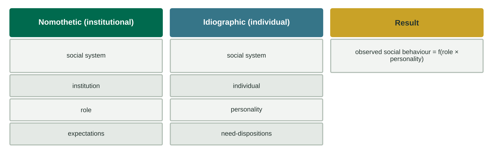
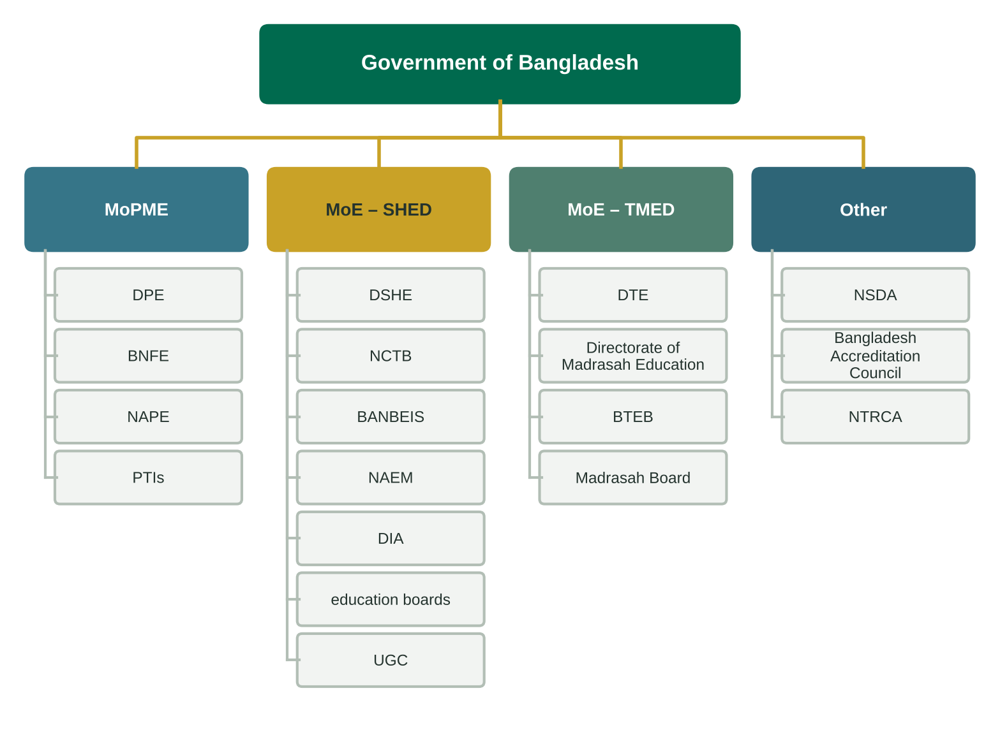
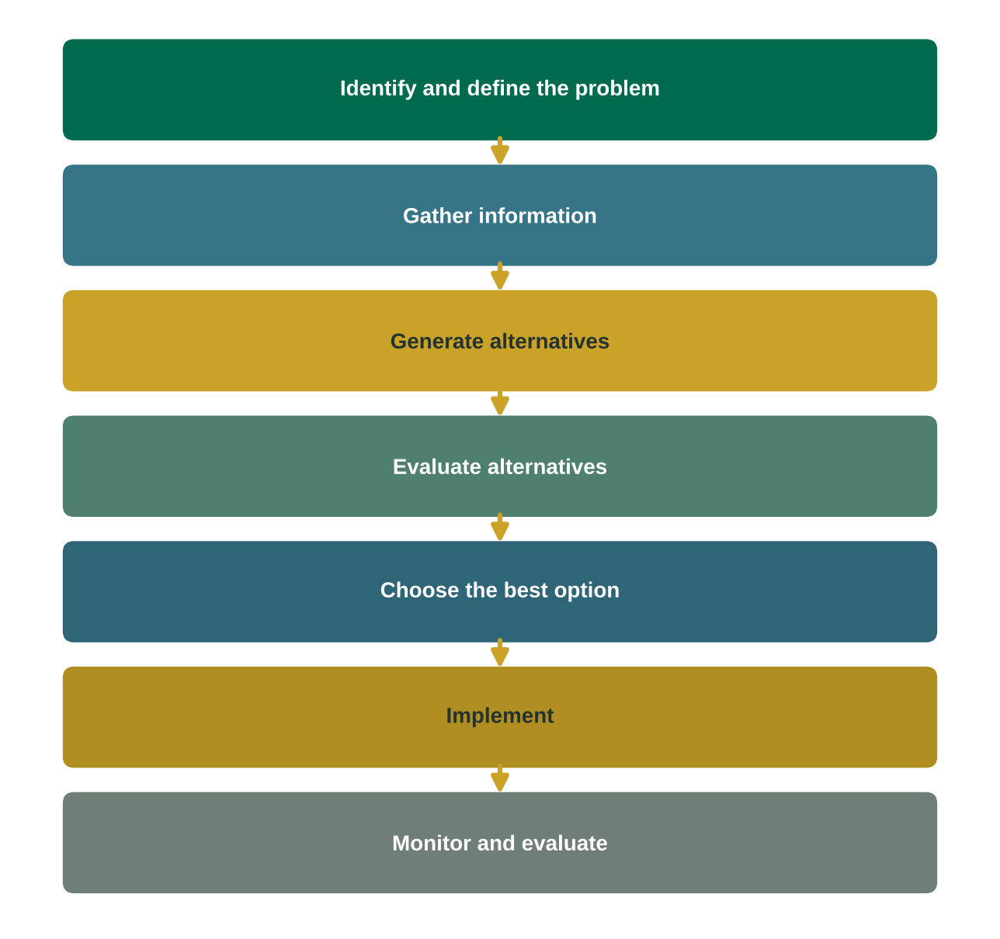
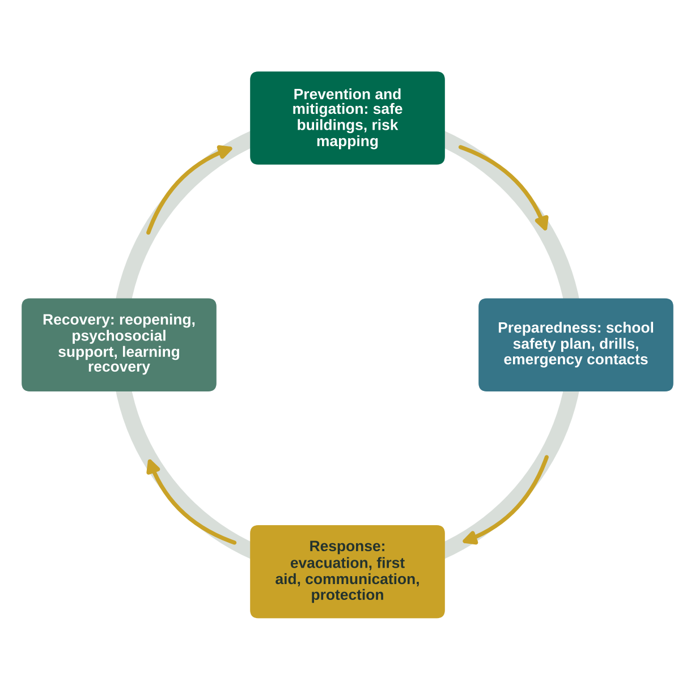
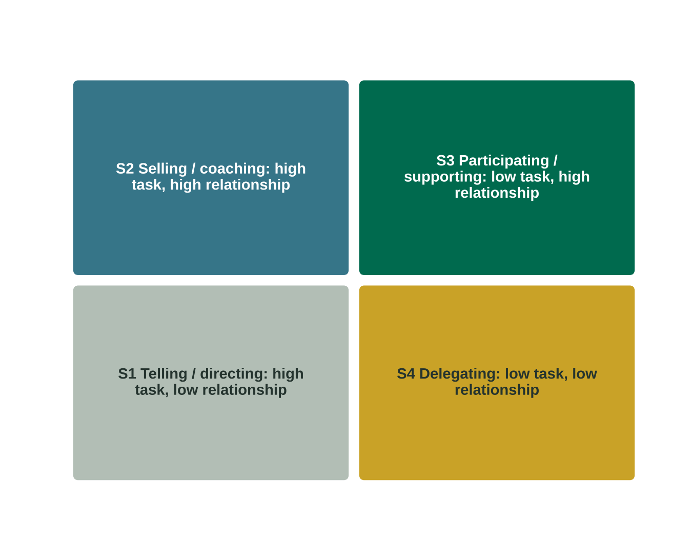
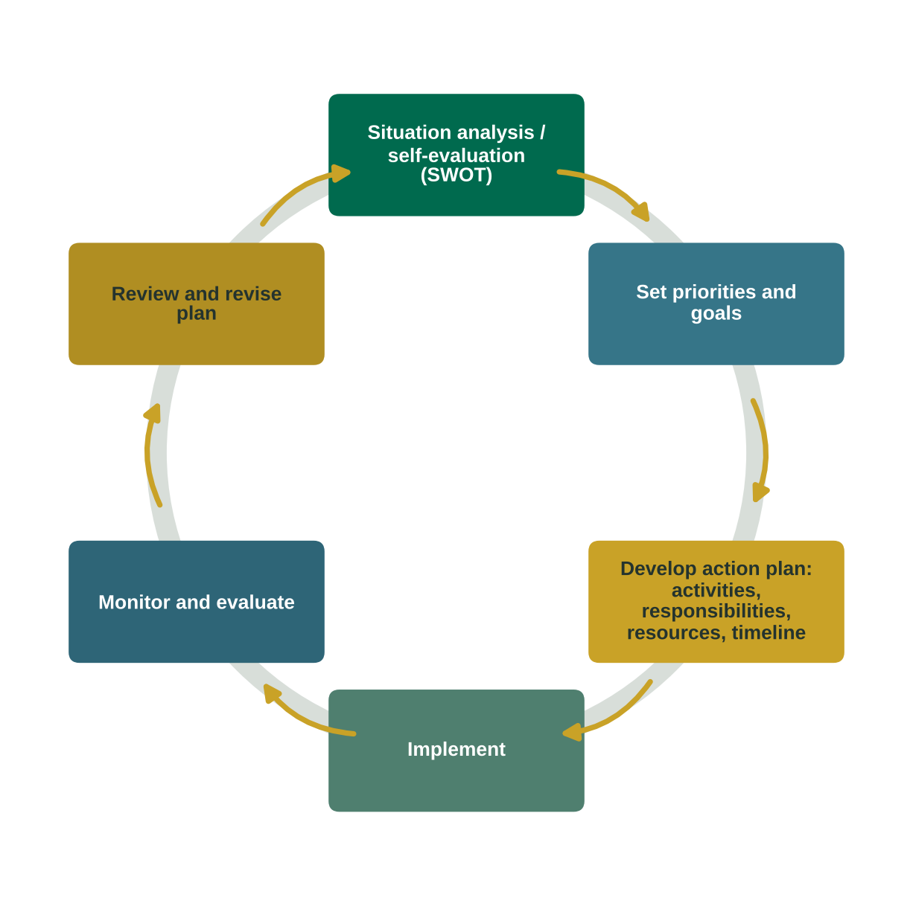
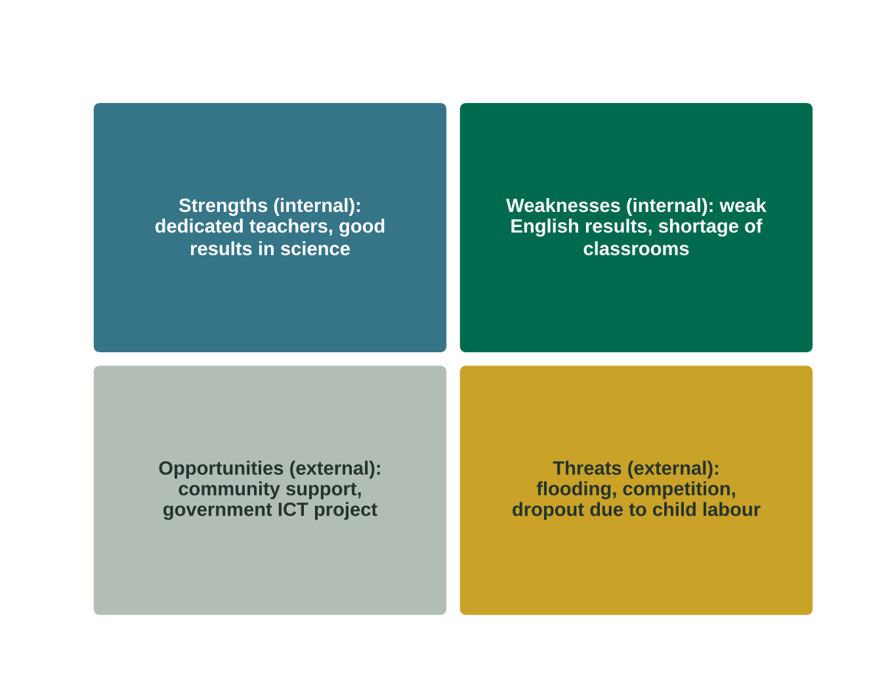

PC 118 শিক্ষাপ্রতিষ্ঠানের সংগঠন ও ব্যবস্থাপনা
সংগঠন তত্ত্ব, ব্যবস্থাপনা কাঠামো, নেতৃত্ব, শিক্ষাক্রমিক ও সহশিক্ষাক্রমিক ব্যবস্থাপনা, তহবিল ও সম্পদ
এটি ইংরেজি পাঠ নোটের বাংলা সংস্করণ। পাঠতালিকা ও তথ্যসূত্রের বইয়ের নাম মূল ভাষায় রাখা হয়েছে, যাতে লাইব্রেরিতে সহজে খুঁজে পান।
সূচিপত্র
- ইউনিট ১: সামাজিক ব্যবস্থা হিসেবে সংগঠন
- ইউনিট ২: শিক্ষাপ্রতিষ্ঠানের ব্যবস্থাপনা কাঠামো
- ইউনিট ৩: শিক্ষাপ্রতিষ্ঠানে নেতা হিসেবে প্রতিষ্ঠানপ্রধানের ভূমিকা
- ইউনিট ৪: শিক্ষাক্রমিক ও সহশিক্ষাক্রমিক কার্যক্রম ব্যবস্থাপনা
- ইউনিট ৫: বিদ্যালয়ের তহবিল ও অন্যান্য সম্পদ ব্যবস্থাপনা
- ইউনিট ৬: ব্যবহারিক কার্যক্রম
- পাঠতালিকা
- পরীক্ষা প্রস্তুতি প্রশ্নব্যাংক
- তথ্যসূত্র
এই কোর্স সম্পর্কে
বিদ্যালয়, কলেজ ও বিশ্ববিদ্যালয় হলো সংগঠন: এগুলোর লক্ষ্য, কাঠামো, জনবল, সংস্কৃতি ও সম্পদ রয়েছে, যা ব্যবস্থাপনা করতে হয়। এই কোর্সে বাংলাদেশের শিক্ষাপ্রতিষ্ঠানগুলোর ক্ষেত্রে সংগঠন ও ব্যবস্থাপনা তত্ত্ব প্রয়োগ করা হয়েছে। এতে আলোচিত হয়েছে সামাজিক ব্যবস্থা হিসেবে সংগঠন, শিক্ষা খাতের প্রশাসনিক ও ব্যবস্থাপনা কাঠামো (মন্ত্রণালয়, অধিদপ্তর এবং SMC ও GB-এর মতো পরিচালনা পর্ষদ), নেতা ও সিদ্ধান্ত গ্রহণকারী হিসেবে প্রতিষ্ঠানপ্রধান (জরুরি পরিস্থিতিসহ), শিক্ষাক্রমিক ও সহশিক্ষাক্রমিক কার্যক্রমের ব্যবস্থাপনা, এবং আর্থিক ও ভৌত সম্পদ ব্যবস্থাপনা; সবশেষে রয়েছে প্রাতিষ্ঠানিক পরিকল্পনা ও একটি ব্যবহারিক কার্যক্রম।
কোর্সের উদ্দেশ্য
সংগঠনের ধারণা, প্রকারভেদ ও কার্যাবলি এবং সামাজিক ব্যবস্থা হিসেবে বিদ্যালয় ব্যাখ্যা করা।
শিক্ষা ব্যবস্থাপনার প্রক্রিয়া, কার্যাবলি, নীতি ও ধরন এবং বাংলাদেশের ব্যবস্থাপনা কাঠামো বর্ণনা করা।
নেতা, সিদ্ধান্ত গ্রহণকারী ও সংকট ব্যবস্থাপক হিসেবে প্রতিষ্ঠানপ্রধানের ভূমিকা বিশ্লেষণ করা।
শিক্ষাক্রমিক ও সহশিক্ষাক্রমিক কার্যক্রম, অর্থ এবং ভৌত সুবিধাদির ব্যবস্থাপনা পরিকল্পনা করা।
প্রতিটি ইউনিট অফিশিয়াল পাঠ্যসূচির ক্রম অনুসরণ করে। প্রথমে মূল আলোচনা পড়ুন, তারপর মূল কথা বক্সগুলো, এরপর পরীক্ষার প্রস্তুতি প্রশ্ন দিয়ে নিজেকে যাচাই করুন।
সোনালি বক্স = অবশ্যই মনে রাখার বিষয়। সবুজাভ নীল বক্স = সংজ্ঞা ও পড়ার কৌশল। সবুজ বক্স = বাংলাদেশ প্রেক্ষাপট।
শেষ অধ্যায়টি বিশ্ববিদ্যালয় পরীক্ষার ধরনে একটি প্রশ্নব্যাংক (উত্তরসহ MCQ, সংক্ষিপ্ত ও রচনামূলক প্রশ্ন), এরপর APA 7th রীতিতে পূর্ণ তথ্যসূত্র।
ভর্তি, বাজেট ও নীতি সংক্রান্ত পরিসংখ্যান প্রতি বছর বদলায়। পরীক্ষার আগে BANBEIS, DPE, UGC ও UNESCO-এর সর্বশেষ তথ্য দেখে নিন।
ইউনিট ১: সামাজিক ব্যবস্থা হিসেবে সংগঠন
অধ্যায়ের সারসংক্ষেপ
সংগঠন বলতে সংগঠিত করার প্রক্রিয়াকেও বোঝায় : কাজ ভাগ করা, কার্যক্রমগুলোকে শ্রেণিবদ্ধ করা, কর্তৃত্ব ও দায়িত্ব অর্পণ করা এবং এমন সম্পর্ক স্থাপন করা, যাতে মানুষ লক্ষ্য অর্জনে একসঙ্গে কাজ করে।
এই অধ্যায়ে যা আছে: সংগঠনের অর্থ, ধারণা, প্রকারভেদ ও কার্যাবলি; সামাজিক ব্যবস্থা হিসেবে সংগঠন; সংগঠন বনাম প্রতিষ্ঠান; সামাজিক সংগঠন হিসেবে শিক্ষাপ্রতিষ্ঠান।
মূল পরিভাষা:
- সংগঠন (Organisation) : "নির্দিষ্ট লক্ষ্য অর্জনের জন্য সচেতনভাবে নির্মিত ও পুনর্নির্মিত একটি সামাজিক একক (বা মানবগোষ্ঠী)" (Etzioni, 1964)।
মনে রাখার মূল বিষয়:
- উইকের (Weick) "শিথিলভাবে সংযুক্ত ব্যবস্থা" (loosely coupled systems) ধারণা ব্যাখ্যা করে কেন মন্ত্রণালয়ে ঘোষিত একটি নীতি শ্রেণিকক্ষে সামান্যই পরিবর্তন আনতে পারে: এককগুলো পরস্পর সংযুক্ত থাকলেও নিজেদের স্বাতন্ত্র্য বজায় রাখে।
শিক্ষাক্রমে যা বলা হয়েছেইউনিট ১: সামাজিক ব্যবস্থা হিসেবে সংগঠন · ৫ সংযোগ ঘণ্টা
এই ইউনিট শেষে শিক্ষার্থীরা যা পারবে
- সামাজিক ব্যবস্থা হিসেবে সংগঠন ব্যাখ্যা করতে পারবেন
- শিক্ষাপ্রতিষ্ঠান যে সামাজিক সংগঠন, তার যৌক্তিকতা প্রদর্শন করতে পারবেন
- সামাজিক সংগঠন ও প্রতিষ্ঠানের স্বরূপের পার্থক্য নির্দেশ করতে এবং এগুলোর কার্যাবলি ব্যাখ্যা করতে পারবেন
- সংগঠনের অর্থ, ধারণা, প্রকারভেদ ও কার্যাবলি
- সামাজিক ব্যবস্থা হিসেবে সংগঠন
- সংগঠন বনাম প্রতিষ্ঠান এবং এগুলোর বৈশিষ্ট্য
- সামাজিক সংগঠন হিসেবে শিক্ষাপ্রতিষ্ঠান
১.১ সংগঠনের অর্থ, ধারণা, প্রকারভেদ ও কার্যাবলি
সংগঠন (Organisation): "নির্দিষ্ট লক্ষ্য অর্জনের জন্য সচেতনভাবে নির্মিত ও পুনর্নির্মিত একটি সামাজিক একক (বা মানবগোষ্ঠী)" (Etzioni, 1964)। বার্নার্ড (Barnard, 1938) একে সংজ্ঞায়িত করেছেন "দুই বা ততোধিক ব্যক্তির সচেতনভাবে সমন্বিত কার্যক্রম বা শক্তির একটি ব্যবস্থা" হিসেবে।
সংগঠন বলতে সংগঠিত করার প্রক্রিয়াকেও বোঝায়: কাজ ভাগ করা, কার্যক্রমগুলোকে শ্রেণিবদ্ধ করা, কর্তৃত্ব ও দায়িত্ব অর্পণ করা এবং এমন সম্পর্ক স্থাপন করা, যাতে মানুষ লক্ষ্য অর্জনে একসঙ্গে কাজ করে।
উপাদান: লক্ষ্য; জনবল; কাঠামো (ভূমিকা, স্তরবিন্যাস, নিয়মকানুন); প্রযুক্তি (কাজের পদ্ধতি); পরিবেশ; এবং সংস্কৃতি।
সংগঠনের প্রকারভেদ:
| ভিত্তি | প্রকারভেদ |
|---|---|
| কাঠামো | আনুষ্ঠানিক (দাপ্তরিক স্তরবিন্যাস ও নিয়মকানুনসহ সচেতনভাবে পরিকল্পিত) এবং অনানুষ্ঠানিক (আনুষ্ঠানিক সংগঠনের অভ্যন্তরে ব্যক্তিগত সম্পর্কের স্বতঃস্ফূর্ত নেটওয়ার্ক) |
| কর্তৃত্বের ধরন | রৈখিক (Line) (সরাসরি আদেশ-শৃঙ্খল), রৈখিক ও উপদেষ্টা (line and staff) (বিশেষজ্ঞদের পরামর্শপ্রাপ্ত রৈখিক ব্যবস্থাপক), কার্যভিত্তিক (functional) (বিশেষজ্ঞরা বিভিন্ন এককজুড়ে নিজ নিজ কার্য পরিচালনা করেন), ম্যাট্রিক্স (matrix) (দ্বৈত জবাবদিহি: প্রকল্প ও কার্য), কমিটি |
| মালিকানা / উদ্দেশ্য (Blau & Scott, 1962: cui bono, "কে উপকৃত হয়?") | পারস্পরিক উপকারমূলক (ইউনিয়ন), ব্যবসায়িক (প্রতিষ্ঠান বা ফার্ম), সেবামূলক (বিদ্যালয়, হাসপাতাল: সেবাগ্রহীতারা উপকৃত হয়), জনকল্যাণমূলক (পুলিশ, সেনাবাহিনী: জনগণ উপকৃত হয়) |
| আনুগত্য (Etzioni, 1961) | বলপ্রয়োগমূলক (কারাগার), উপযোগমূলক (ব্যবসা), আদর্শমূলক (বিদ্যালয়, ধর্মীয় সংস্থা) |
সংগঠনের কার্যাবলি: লক্ষ্য স্পষ্টকরণ; শ্রমবিভাজন ও বিশেষায়ণ; কর্তৃত্ব ও জবাবদিহি প্রতিষ্ঠা; সমন্বয়সাধন; যোগাযোগ সহজীকরণ; সম্পদের দক্ষ ব্যবহার; স্থিতিশীলতা ও প্রবৃদ্ধি নিশ্চিতকরণ।
১.২ সামাজিক ব্যবস্থা হিসেবে সংগঠন
সামাজিক ব্যবস্থা (social system) হলো পরস্পর সম্পর্কিত অংশের (মানুষ, ভূমিকা, দল) একটি সমষ্টি, যেগুলো একটি পরিবেশের মধ্যে লক্ষ্য অর্জনের জন্য মিথস্ক্রিয়া করে। উন্মুক্ত ব্যবস্থা তত্ত্ব (Open systems theory) (Katz & Kahn, 1966) বিদ্যালয়কে উন্মুক্ত ব্যবস্থা হিসেবে দেখে, যা উপকরণ বা ইনপুট (শিক্ষার্থী, শিক্ষক, তহবিল, শিক্ষাক্রম) গ্রহণ করে, প্রক্রিয়ার (শিক্ষাদান, শিখন, ব্যবস্থাপনা) মাধ্যমে সেগুলোকে রূপান্তরিত করে এবং ফল বা আউটপুট (শিক্ষিত স্নাতক) উৎপন্ন করে, সঙ্গে পরিবেশ থেকে ফলাবর্তন (feedback) পায়।

চিত্র ১. উন্মুক্ত ব্যবস্থা হিসেবে বিদ্যালয়
গেটজেলস–গুবা মডেল (Getzels–Guba model, 1957)
গেটজেলস (Getzels) ও গুবা (Guba) একটি সংগঠনে সামাজিক আচরণকে দুটি মাত্রার অপেক্ষক হিসেবে বর্ণনা করেছেন:
প্রাতিষ্ঠানিক (Nomothetic) মাত্রা: প্রতিষ্ঠান → ভূমিকা → প্রত্যাশা।
ব্যক্তিগত (Idiographic) মাত্রা: ব্যক্তি → ব্যক্তিত্ব → চাহিদা-প্রবণতা।
আচরণ (B) = f(R × P), অর্থাৎ ভূমিকা ও ব্যক্তিত্বের মিথস্ক্রিয়া। কার্যকর প্রশাসকেরা প্রাতিষ্ঠানিক প্রত্যাশা ও ব্যক্তিগত চাহিদার মধ্যে ভারসাম্য রক্ষা করেন; এ দুটির সংঘাত ঘটলে দ্বন্দ্বের সৃষ্টি হয়। পরবর্তী সংস্করণগুলোতে সাংস্কৃতিক মাত্রা (নীতিবোধ বা ethos, মূল্যবোধ) যুক্ত করা হয়েছে।

চিত্র ২. গেটজেলস ও গুবার সামাজিক ব্যবস্থা মডেল
১.৩ সংগঠন বনাম প্রতিষ্ঠান
| ভিত্তি | সংগঠন | প্রতিষ্ঠান (Institution) |
|---|---|---|
| প্রকৃতি | লক্ষ্য অর্জনে নিয়োজিত মানুষের একটি সচেতনভাবে কাঠামোবদ্ধ দল | রীতিনীতি, মূল্যবোধ ও চর্চার একটি প্রতিষ্ঠিত ও স্থায়ী ধরন, যাকে সমাজ গুরুত্বপূর্ণ মনে করে |
| উদাহরণ | একটি নির্দিষ্ট বিদ্যালয়, DSHE | শিক্ষা, পরিবার, ধর্ম, বিবাহ |
| গঠন | সচেতনভাবে সৃষ্ট | সময়ের পরিক্রমায় বিবর্তিত |
| মূর্ততা | মূর্ত, যার সদস্য, ভবন ও বাজেট রয়েছে | বিমূর্ত, রীতিনীতির একটি ব্যবস্থা |
| পরিবর্তন | দ্রুত পুনর্গঠন করা যায় | ধীরে পরিবর্তিত হয় |
সেলজনিক (Selznick, 1957) উল্লেখ করেছেন যে একটি সংগঠন তখনই প্রতিষ্ঠানে পরিণত হয়, যখন তা "হাতের কাজের কারিগরি প্রয়োজনের বাইরেও মূল্যবোধে সঞ্জীবিত" হয়। একটি বিদ্যালয় উভয়ই: একটি সংগঠন (একটি কাঠামোবদ্ধ একক) এবং শিক্ষা নামক প্রতিষ্ঠানের অংশ।
১.৪ সামাজিক সংগঠন হিসেবে শিক্ষাপ্রতিষ্ঠান
সংগঠন হিসেবে বিদ্যালয়ের কিছু স্বতন্ত্র বৈশিষ্ট্য রয়েছে:
লক্ষ্যগুলো বহুবিধ, জটিল এবং কখনো কখনো অস্পষ্ট (শিক্ষাগত, সামাজিক, নৈতিক)।
"কাঁচামাল" (শিক্ষার্থী) মানুষ, বৈচিত্র্যময় এবং প্রক্রিয়ায় নিজেও অংশগ্রহণ করে।
মূল প্রযুক্তি (শিক্ষাদান) অনিশ্চিত এবং একে আদর্শায়িত করা কঠিন।
শিক্ষকগণ পেশাজীবী এবং শ্রেণিকক্ষে তাঁদের উল্লেখযোগ্য স্বাধীনতা রয়েছে, তাই বিদ্যালয় হলো শিথিলভাবে সংযুক্ত ব্যবস্থা (loosely coupled systems) (Weick, 1976)।
বিদ্যালয় তার পরিবেশের (অভিভাবক, সমাজ, সরকার) ওপর ব্যাপকভাবে নির্ভরশীল।
বিদ্যালয়ের একটি শক্তিশালী সংস্কৃতি ও পরিবেশ বা আবহ (climate) রয়েছে (Hoy & Miskel, 2013), যা এর কার্যকারিতা নির্ধারণ করে।
উইকের "শিথিলভাবে সংযুক্ত ব্যবস্থা" ধারণা ব্যাখ্যা করে কেন মন্ত্রণালয়ে ঘোষিত একটি নীতি শ্রেণিকক্ষে সামান্যই পরিবর্তন আনতে পারে: এককগুলো পরস্পর সংযুক্ত থাকলেও নিজেদের স্বাতন্ত্র্য বজায় রাখে। ভালো বিদ্যালয়-নেতারা পেশাগত স্বাধীনতাকে সম্মান করেই শিক্ষাদান ও শিখনকে কেন্দ্র করে সংযোগ জোরদার করেন (শিক্ষণ নেতৃত্ব বা instructional leadership)।
ইউনিট ২: শিক্ষাপ্রতিষ্ঠানের ব্যবস্থাপনা কাঠামো
অধ্যায়ের সারসংক্ষেপ
ফেয়লের ১৪টি নীতি আজও প্রামাণ্য সূত্র হিসেবে বিবেচিত: কর্মবিভাজন, কর্তৃত্ব ও দায়িত্ব, শৃঙ্খলা, আদেশের ঐক্য, নির্দেশনার ঐক্য, সামগ্রিক স্বার্থের কাছে ব্যক্তিস্বার্থের অধীনতা, পারিশ্রমিক, কেন্দ্রীকরণ, স্তরশৃঙ্খল (scalar chain), শৃঙ্খলাবদ্ধ বিন্যাস, ন্যায্যতা, চাকরির স্থায়িত্ব, উদ্যোগ এবং দলীয় সংহতি (esprit de corps)।
এই অধ্যায়ে যা আছে: প্রশাসন, ব্যবস্থাপনা ও শিক্ষা প্রশাসন; ব্যবস্থাপনার প্রক্রিয়া ও কার্যাবলি; ব্যবস্থাপনার নীতি; ব্যবস্থাপনার ভিত্তিস্বরূপ তত্ত্বসমূহ; ব্যবস্থাপনার ধরন; প্রশাসনিক কাঠামোর প্রকারভেদ; বাংলাদেশের মন্ত্রণালয় ও অধীন অধিদপ্তরসমূহ; শিক্ষাপ্রতিষ্ঠানের ব্যবস্থাপনা।
শিক্ষাক্রমে যা বলা হয়েছেইউনিট ২: শিক্ষাপ্রতিষ্ঠানের ব্যবস্থাপনা কাঠামো · ১০ সংযোগ ঘণ্টা
এই ইউনিট শেষে শিক্ষার্থীরা যা পারবে
- শিক্ষা প্রশাসন ও ব্যবস্থাপনার ধারণা ব্যাখ্যা করতে পারবেন
- শিক্ষাপ্রতিষ্ঠানে ব্যবস্থাপনার নীতি, ধরন ও প্রক্রিয়া বর্ণনা করতে পারবেন
- শিক্ষার বিভিন্ন স্তরের প্রশাসনিক কাঠামো চিহ্নিত করতে পারবেন
- শিক্ষাসংশ্লিষ্ট বিভিন্ন মন্ত্রণালয়ের ক্ষমতা ও কার্যাবলি ব্যাখ্যা করতে এবং অর্গানোগ্রাম অঙ্কন করতে পারবেন
- শিক্ষাপ্রতিষ্ঠানের ব্যবস্থাপনা কমিটিগুলোর ভূমিকা পর্যালোচনা করতে পারবেন
- প্রশাসন ও ব্যবস্থাপনার ধারণা, শিক্ষা প্রশাসন
- ব্যবস্থাপনার প্রক্রিয়া, কার্যাবলি, নীতি ও ধরন
- শিক্ষাপ্রতিষ্ঠানের প্রশাসনিক ও ব্যবস্থাপনা কাঠামোর প্রকারভেদ
- শিক্ষা মন্ত্রণালয়সমূহ ও অধীন অধিদপ্তরগুলোর কার্যাবলি ও দায়িত্ব
- শিক্ষাপ্রতিষ্ঠানের ব্যবস্থাপনা: ই-ব্যবস্থাপনা, কমিটি, SMC, CMC, MMC, GB
২.১ প্রশাসন, ব্যবস্থাপনা ও শিক্ষা প্রশাসন
প্রশাসন (Administration) নীতি, লক্ষ্য ও সামগ্রিক দিকনির্দেশনা নির্ধারণের সঙ্গে সম্পর্কিত; এটি একটি উচ্চস্তরের, চিন্তনমূলক কাজ।
ব্যবস্থাপনা (Management) নীতি বাস্তবায়ন, সম্পদ সংগঠন এবং লক্ষ্য অর্জনে জনবলকে পরিচালনার সঙ্গে সম্পর্কিত; এটি একটি সম্পাদনমূলক কাজ।
শিক্ষাক্ষেত্রে এই পরিভাষাগুলোর অর্থ পরস্পর অনেকটা মিলে যায়। শিক্ষা প্রশাসন (Educational administration) হলো "কর্মীদের প্রচেষ্টাকে সমন্বিত করা এবং উপযুক্ত উপকরণ এমনভাবে ব্যবহার করার প্রক্রিয়া, যাতে মানবিক গুণাবলির বিকাশ কার্যকরভাবে উৎসাহিত হয়" (Campbell et al.)। ব্রিটেন ও কমনওয়েলথভুক্ত দেশগুলোতে শিক্ষা ব্যবস্থাপনা (Educational management) পরিভাষাটি ক্রমবর্ধমান হারে ব্যবহৃত হচ্ছে (Bush, 2020)।
| ভিত্তি | প্রশাসন | ব্যবস্থাপনা |
|---|---|---|
| কাজ | নীতি প্রণয়ন, লক্ষ্য নির্ধারণ | নীতি বাস্তবায়ন |
| স্তর | শীর্ষ স্তর | মধ্য ও নিম্ন স্তর |
| প্রকৃতি | নির্ধারণমূলক | নির্বাহী |
| মূল লক্ষ্য | কী ও কেন | কীভাবে |
| উদাহরণ | শিক্ষা মন্ত্রণালয় | প্রধান শিক্ষক, DEO |
২.২ ব্যবস্থাপনার প্রক্রিয়া ও কার্যাবলি
| তাত্ত্বিক | কার্যাবলি |
|---|---|
| অঁরি ফেয়ল (Henri Fayol, 1916) | POCCC: পরিকল্পনা (Planning), সংগঠন (Organising), আদেশ প্রদান (Commanding), সমন্বয়সাধন (Coordinating), নিয়ন্ত্রণ (Controlling) |
| লুথার গুলিক (Luther Gulick, 1937) | POSDCORB: পরিকল্পনা (Planning), সংগঠন (Organising), কর্মী নিয়োগ (Staffing), নির্দেশনা (Directing), সমন্বয়সাধন (Co-ordinating), প্রতিবেদন (Reporting), বাজেট প্রণয়ন (Budgeting) |
| আধুনিক সমন্বিত রূপ | পরিকল্পনা, সংগঠন, কর্মী নিয়োগ, নেতৃত্ব প্রদান (নির্দেশনা, প্রেষণা প্রদান, যোগাযোগ), নিয়ন্ত্রণ (পরিবীক্ষণ, মূল্যায়ন) |
")
চিত্র ৩. ব্যবস্থাপনা প্রক্রিয়া (গুলিকের POSDCORB)
২.৩ ব্যবস্থাপনার নীতি
ফেয়লের ১৪টি নীতি আজও প্রামাণ্য সূত্র হিসেবে বিবেচিত: কর্মবিভাজন, কর্তৃত্ব ও দায়িত্ব, শৃঙ্খলা, আদেশের ঐক্য, নির্দেশনার ঐক্য, সামগ্রিক স্বার্থের কাছে ব্যক্তিস্বার্থের অধীনতা, পারিশ্রমিক, কেন্দ্রীকরণ, স্তরশৃঙ্খল (scalar chain), শৃঙ্খলাবদ্ধ বিন্যাস, ন্যায্যতা, চাকরির স্থায়িত্ব, উদ্যোগ এবং দলীয় সংহতি (esprit de corps)।
শিক্ষা ব্যবস্থাপনার সুনির্দিষ্ট নীতি: গণতান্ত্রিক অংশগ্রহণ; শিশুকেন্দ্রিকতা; শিক্ষকদের পেশাগত স্বাধীনতা; ন্যায্যতা ও একীভূতকরণ; জবাবদিহি ও স্বচ্ছতা; নমনীয়তা; সমাজের সঙ্গে সহযোগিতা; এবং নিরবচ্ছিন্ন উন্নয়ন।
২.৪ ব্যবস্থাপনার ভিত্তিস্বরূপ তত্ত্বসমূহ
ধ্রুপদি (Classical): বৈজ্ঞানিক ব্যবস্থাপনা (Taylor, 1911), প্রশাসনিক ব্যবস্থাপনা (Fayol), আমলাতন্ত্র (Weber: স্তরবিন্যাস, নিয়মকানুন, নৈর্ব্যক্তিকতা, যোগ্যতা, বিশেষায়ণ)।
মানবিক সম্পর্ক (Human relations): এলটন মেয়োর (Elton Mayo) হথর্ন গবেষণা (১৯২০–৩০-এর দশক) সামাজিক ও মনস্তাত্ত্বিক উপাদানের গুরুত্ব তুলে ধরে; ম্যাকগ্রেগরের (McGregor) Theory X (মানুষ কাজ অপছন্দ করে এবং তাকে নিয়ন্ত্রণ করতে হয়) ও Theory Y (মানুষ দায়িত্ব ও আত্মনির্দেশনা চায়) (1960)।
আচরণবিজ্ঞান / ব্যবস্থা তত্ত্ব: Barnard, Simon, Getzels–Guba, উন্মুক্ত ব্যবস্থা তত্ত্ব।
সমকালীন: সামগ্রিক মান ব্যবস্থাপনা (total quality management) (Deming), শিখন সংগঠন (learning organisations) (Senge, 1990), বণ্টিত নেতৃত্ব (distributed leadership), বিদ্যালয়ভিত্তিক ব্যবস্থাপনা।
২.৫ ব্যবস্থাপনার ধরন
| ধরন | বৈশিষ্ট্যসমূহ | প্রভাব |
|---|---|---|
| স্বৈরতান্ত্রিক / কর্তৃত্ববাদী | প্রধান একাই সিদ্ধান্ত নেন; কঠোর নিয়ন্ত্রণ | দ্রুত সিদ্ধান্ত; মনোবল ও সৃজনশীলতা কম |
| গণতান্ত্রিক / অংশগ্রহণমূলক | কর্মীদের সঙ্গে মিলে সিদ্ধান্ত গ্রহণ | উচ্চ মনোবল ও অঙ্গীকার; তুলনামূলক ধীর |
| অবাধ (Laissez-faire) | ন্যূনতম নির্দেশনা; কর্মীদের পূর্ণ স্বাধীনতা | অত্যন্ত দক্ষ কর্মীদের ক্ষেত্রে কার্যকর; অন্যথায় বিশৃঙ্খলা |
| আমলাতান্ত্রিক | নিয়মকানুন কঠোরভাবে অনুসরণ করে | সামঞ্জস্য; অনমনীয়তা |
| পিতৃতান্ত্রিক (Paternalistic) | প্রধান একজন যত্নশীল অভিভাবকের মতো আচরণ করেন | আনুগত্য; নির্ভরশীলতা |
লিউইন (Lewin), লিপিট (Lippitt) ও হোয়াইট (White) (1939) শিশুদের ক্লাবগুলোতে গবেষণা করে দেখান যে গণতান্ত্রিক নেতৃত্ব সবচেয়ে ইতিবাচক দলীয় আবহ এবং টেকসই উৎপাদনশীলতা সৃষ্টি করে।
২.৬ প্রশাসনিক কাঠামোর প্রকারভেদ
কেন্দ্রীভূত (Centralised): সিদ্ধান্ত শীর্ষ পর্যায়ে (জাতীয় স্তরে) গৃহীত হয়। বাংলাদেশের শিক্ষাব্যবস্থা মূলত কেন্দ্রীভূত: শিক্ষাক্রম, পাঠ্যপুস্তক, পরীক্ষা, MPO ও নিয়োগবিধি জাতীয়ভাবে নির্ধারিত।
বিকেন্দ্রীভূত (Decentralised): কর্তৃত্ব অঞ্চল, জেলা বা বিদ্যালয়ের কাছে অর্পিত হয়; বিদ্যালয়ভিত্তিক ব্যবস্থাপনা (school-based management, SBM) বাজেট, কর্মী ও পরিকল্পনার ওপর বিদ্যালয়কে কর্তৃত্ব প্রদান করে (Caldwell & Spinks, 1988)।
প্রতিষ্ঠানের অভ্যন্তরে রৈখিক, রৈখিক-ও-উপদেষ্টা, কার্যভিত্তিক ও কমিটি কাঠামো।
২.৭ বাংলাদেশের মন্ত্রণালয় ও অধীন অধিদপ্তরসমূহ

চিত্র ৪. বাংলাদেশে শিক্ষা পরিচালনার প্রধান সংস্থাসমূহ
| সংস্থা | প্রধান কার্যাবলি |
|---|---|
| প্রাথমিক ও গণশিক্ষা মন্ত্রণালয় (MoPME) | প্রাক-প্রাথমিক, প্রাথমিক ও উপানুষ্ঠানিক শিক্ষার নীতি, পরিকল্পনা ও অর্থায়ন |
| প্রাথমিক শিক্ষা অধিদপ্তর (DPE) | প্রাথমিক শিক্ষা কর্মসূচি বাস্তবায়ন, শিক্ষক নিয়োগ ও প্রশিক্ষণ, উপবৃত্তি, পরিবীক্ষণ |
| উপানুষ্ঠানিক শিক্ষা ব্যুরো (BNFE) | সাক্ষরতা, দ্বিতীয় সুযোগের শিক্ষা ও জীবনব্যাপী শিখন কর্মসূচি |
| শিক্ষা মন্ত্রণালয় (MoE) | মাধ্যমিক ও উচ্চশিক্ষা বিভাগ (SHED) এবং কারিগরি ও মাদ্রাসা শিক্ষা বিভাগের (TMED) মাধ্যমে মাধ্যমিক, উচ্চ, মাদ্রাসা ও কারিগরি শিক্ষার নীতি প্রণয়ন |
| মাধ্যমিক ও উচ্চশিক্ষা অধিদপ্তর (DSHE) | মাধ্যমিক ও উচ্চমাধ্যমিক বিদ্যালয় ও কলেজের প্রশাসন, MPO, পরিদর্শন, প্রকল্প |
| মাদ্রাসা শিক্ষা অধিদপ্তর | আলিয়া মাদ্রাসাসমূহের প্রশাসন |
| কারিগরি শিক্ষা অধিদপ্তর (DTE) | পলিটেকনিক, TSC, TVET শিক্ষক প্রশিক্ষণ |
| জাতীয় শিক্ষাক্রম ও পাঠ্যপুস্তক বোর্ড (NCTB) | শিক্ষাক্রম ও পাঠ্যপুস্তক |
| বাংলাদেশ শিক্ষাতথ্য ও পরিসংখ্যান ব্যুরো (BANBEIS) | শিক্ষা পরিসংখ্যান এবং শিক্ষা ব্যবস্থাপনা তথ্যব্যবস্থা (EMIS) |
| জাতীয় শিক্ষা ব্যবস্থাপনা একাডেমি (NAEM) | শিক্ষা ব্যবস্থাপক ও শিক্ষকদের প্রশিক্ষণ |
| পরিদর্শন ও নিরীক্ষা অধিদপ্তর (DIA) | বেসরকারি প্রতিষ্ঠানসমূহের পরিদর্শন ও নিরীক্ষা |
| শিক্ষা বোর্ড | নিবন্ধন, পাবলিক পরীক্ষা, প্রতিষ্ঠানের স্বীকৃতি প্রদান, ব্যবস্থাপনা কমিটি সংক্রান্ত বিধিমালা |
| বিশ্ববিদ্যালয় মঞ্জুরি কমিশন (UGC) | উচ্চশিক্ষার পরিকল্পনা, অর্থায়ন ও মান নিশ্চিতকরণ |
২.৮ শিক্ষাপ্রতিষ্ঠানের ব্যবস্থাপনা
ই-ব্যবস্থাপনা (E-management): প্রশাসন ও উপাত্ত ব্যবস্থাপনার ডিজিটাল ব্যবস্থা, যেমন EMIS (BANBEIS), IPEMIS (DPE-এর সমন্বিত প্রাথমিক শিক্ষা ব্যবস্থাপনা তথ্যব্যবস্থা), অনলাইন ভর্তি ও ফলাফল ব্যবস্থা, ই-MPO, শিক্ষক বাতায়ন (Teachers' Portal) এবং অনলাইন হাজিরা। সুবিধা: স্বচ্ছতা, দ্রুততা, উপাত্তনির্ভর সিদ্ধান্ত। চ্যালেঞ্জ: ইন্টারনেট সংযোগ, দক্ষতা, উপাত্তের নিরাপত্তা।
বিদ্যালয় ব্যবস্থাপনা কমিটি (SMC): DPE-এর নির্দেশিকা অনুযায়ী প্রাথমিক বিদ্যালয়ের জন্য গঠিত; সদস্যদের মধ্যে রয়েছেন প্রধান শিক্ষক (সদস্য-সচিব), অভিভাবক, শিক্ষক, দাতা ও স্থানীয় প্রতিনিধি। কার্যাবলি: বিদ্যালয় উন্নয়ন পরিকল্পনা (SLIP), উপস্থিতি ও শিখন পরিবীক্ষণ, সমাজের সম্পদ সংগ্রহ, সুবিধাদি তদারকি।
ব্যবস্থাপনা কমিটি (MC) / বিদ্যালয় ব্যবস্থাপনা কমিটি: শিক্ষা বোর্ডের প্রবিধানমালা (২০০৯ সালের প্রবিধানমালা, সংশোধিত রূপে) অনুযায়ী বেসরকারি মাধ্যমিক বিদ্যালয়ের জন্য গঠিত: বাজেট অনুমোদন করে, কর্মী নিয়োগ দেয় (NTRCA-এর বিধি সাপেক্ষে), অর্থব্যবস্থা তত্ত্বাবধান করে।
কলেজ ব্যবস্থাপনা কমিটি (CMC) / গভর্নিং বডি (GB): বেসরকারি কলেজের জন্য গঠিত, জাতীয় বিশ্ববিদ্যালয় বা বোর্ডের প্রবিধানমালা অনুযায়ী অনুরূপ কার্যাবলি পালন করে।
মাদ্রাসা ব্যবস্থাপনা কমিটি (MMC): মাদ্রাসা শিক্ষা বোর্ডের অধীনে বেসরকারি মাদ্রাসার জন্য গঠিত।
সরকারি প্রতিষ্ঠানসমূহ সরাসরি অধিদপ্তর কর্তৃক পরিচালিত হয়, প্রায়ই উপদেষ্টা কমিটির সহায়তায়।
বাংলাদেশে ব্যবস্থাপনা কমিটিগুলোর দীর্ঘস্থায়ী সমস্যার মধ্যে রয়েছে রাজনৈতিক প্রভাব, অনিয়মিত নিয়োগ, দুর্বল আর্থিক জবাবদিহি এবং অভিভাবকদের সীমিত কণ্ঠস্বর। সংস্কার প্রস্তাবের মধ্যে রয়েছে সদস্যদের প্রশিক্ষণ, স্বচ্ছ নির্বাচন, ই-ক্রয় (e-procurement) এবং বোর্ড ও DIA-এর জোরদার তদারকি।
ইউনিট ৩: শিক্ষাপ্রতিষ্ঠানে নেতা হিসেবে প্রতিষ্ঠানপ্রধানের ভূমিকা
অধ্যায়ের সারসংক্ষেপ
শিক্ষাপ্রতিষ্ঠানগুলোর দায়িত্ব হলো: শিক্ষাক্রম বাস্তবায়ন ও শিখন নিশ্চিতকরণ; শিক্ষার্থীদের সামগ্রিক বিকাশ; নিরাপত্তা ও কল্যাণ; একীভূতকরণ; কর্মীদের পেশাগত উন্নয়ন; অভিভাবক ও সমাজের সঙ্গে অংশীদারত্ব; সম্পদের স্বচ্ছ ব্যবহার; নীতিমালার অনুবর্তিতা; এবং নিরবচ্ছিন্ন উন্নয়ন।
এই অধ্যায়ে যা আছে: প্রতিষ্ঠানের ভূমিকা ও দায়িত্ব; নেতা ও সিদ্ধান্ত গ্রহণকারী হিসেবে প্রতিষ্ঠানপ্রধান; জরুরি পরিস্থিতিতে প্রতিষ্ঠানপ্রধানের ভূমিকা; নেতৃত্বের অর্থ, ধারণা ও ধরন; সফল নেতার গুণাবলি; বিদ্যালয় ও কলেজে মানবিক সম্পর্ক।
মূল পরিভাষা:
- নেতৃত্ব (Leadership) : "একটি প্রক্রিয়া, যার মাধ্যমে একজন ব্যক্তি একটি সাধারণ লক্ষ্য অর্জনের জন্য একদল ব্যক্তিকে প্রভাবিত করেন" (Northouse, 2021)।
মনে রাখার মূল বিষয়:
- Leithwood, Harris ও Hopkins (2008), Seven strong claims about successful school leadership : শিক্ষার্থীর শিখনের ওপর প্রভাবের দিক থেকে শ্রেণিকক্ষের শিক্ষাদানের পরেই বিদ্যালয় নেতৃত্বের স্থান; প্রায় সকল সফল নেতা একই মৌলিক চর্চাগুলোর ওপর নির্ভর করেন (রূপকল্প নির্মাণ ও দিকনির্দেশনা নির্ধারণ, বোঝা ও বিকশিত করা…
শিক্ষাক্রমে যা বলা হয়েছেইউনিট ৩: শিক্ষাপ্রতিষ্ঠানে নেতা হিসেবে প্রতিষ্ঠানপ্রধানের ভূমিকা · ১০ সংযোগ ঘণ্টা
এই ইউনিট শেষে শিক্ষার্থীরা যা পারবে
- নেতৃত্বের ধারণা ও ধরন সংজ্ঞায়িত করতে পারবেন
- সফল নেতার দক্ষতা ও গুণাবলি চিহ্নিত করতে পারবেন
- নেতা ও সিদ্ধান্ত গ্রহণকারী হিসেবে প্রতিষ্ঠানপ্রধানের ভূমিকা ও দায়িত্ব ব্যাখ্যা করতে পারবেন
- জরুরি পরিস্থিতিতে প্রতিষ্ঠানপ্রধানের ভূমিকা বর্ণনা করতে পারবেন
- মানবিক সম্পর্ক গড়ে তোলার দক্ষতা প্রদর্শন করতে এবং বিদ্যালয় উন্নয়নের চর্চা হিসেবে তা প্রয়োগ করতে পারবেন
- বিদ্যালয়ের সাফল্যের জন্য নেতৃত্বের দক্ষতা প্রয়োগ করতে পারবেন
- প্রতিষ্ঠানের ভূমিকা ও দায়িত্ব
- নেতা ও সিদ্ধান্ত গ্রহণকারী হিসেবে প্রতিষ্ঠানপ্রধানের ভূমিকা
- জরুরি পরিস্থিতিতে প্রতিষ্ঠানপ্রধানের ভূমিকা (দুর্যোগ, অতিমারি, অতিমারি-পরবর্তী ও অন্যান্য)
- নেতৃত্বের অর্থ, ধারণা ও ধরন
- সফল নেতার গুণাবলি
- বিদ্যালয় ও কলেজে মানবিক সম্পর্ক: কর্মী, শিক্ষার্থী, সমাজ, অভিভাবক ও সরকারি কর্মকর্তা
৩.১ প্রতিষ্ঠানের ভূমিকা ও দায়িত্ব
শিক্ষাপ্রতিষ্ঠানগুলোর দায়িত্ব হলো: শিক্ষাক্রম বাস্তবায়ন ও শিখন নিশ্চিতকরণ; শিক্ষার্থীদের সামগ্রিক বিকাশ; নিরাপত্তা ও কল্যাণ; একীভূতকরণ; কর্মীদের পেশাগত উন্নয়ন; অভিভাবক ও সমাজের সঙ্গে অংশীদারত্ব; সম্পদের স্বচ্ছ ব্যবহার; নীতিমালার অনুবর্তিতা; এবং নিরবচ্ছিন্ন উন্নয়ন।
৩.২ নেতা ও সিদ্ধান্ত গ্রহণকারী হিসেবে প্রতিষ্ঠানপ্রধান
প্রধান শিক্ষক, অধ্যক্ষ বা উপাচার্য হলেন প্রতিষ্ঠানের প্রধান নির্বাহী, শিক্ষণ-নেতা এবং প্রতিষ্ঠানের প্রকাশ্য প্রতিনিধি। প্রধান ভূমিকাসমূহ:
দূরদর্শী: একটি স্পষ্ট রূপকল্প, অভিলক্ষ্য ও লক্ষ্য নির্ধারণ করেন।
শিক্ষণ-নেতা (Instructional leader): শিক্ষাদান তত্ত্বাবধান করেন, শিক্ষাক্রম বাস্তবায়নে সহায়তা করেন, শিখনফল পরিবীক্ষণ করেন (Hallinger & Murphy, 1985)।
ব্যবস্থাপক ও প্রশাসক: সময়সূচি, কর্মী, অর্থ, সুবিধাদি ও নথিপত্র সংগঠিত করেন।
মানবসম্পদ উন্নয়নকারী: কর্মী নিয়োগ, প্রেষণা প্রদান, পরামর্শদান (mentoring) ও উন্নয়ন করেন।
সিদ্ধান্ত গ্রহণকারী ও সমস্যা সমাধানকারী।
যোগাযোগকারী ও জনসংযোগ কর্মকর্তা।
পরিবর্তনের প্রতিনিধি (Change agent): নতুন শিক্ষাক্রম ও ICT-এর মতো উদ্ভাবনে নেতৃত্ব দেন।
শৃঙ্খলা ও সংস্কৃতির অভিভাবক।
সিদ্ধান্ত গ্রহণের মডেল
| মডেল | বিবরণ |
|---|---|
| যৌক্তিক (ধ্রুপদি) | সমস্যা চিহ্নিতকরণ → বিকল্প উদ্ভাবন → মূল্যায়ন → সর্বোত্তমটি নির্বাচন → বাস্তবায়ন → মূল্যায়ন |
| সীমিত যৌক্তিকতা (Bounded rationality) (Simon, 1947) | সীমিত তথ্য ও সময়ের কারণে সিদ্ধান্ত গ্রহণকারীরা "সন্তোষজনক" (satisfice) বিকল্প বেছে নেন |
| ক্রমিক বা ধাপভিত্তিক (Incremental) (Lindblom, 1959) | ছোট ছোট ধারাবাহিক পরিবর্তনের মাধ্যমে "কোনোমতে এগিয়ে চলা" (muddling through) |
| অংশগ্রহণমূলক / যৌথ | অংশীজনদের সম্পৃক্ত করলে সিদ্ধান্তের গ্রহণযোগ্যতা ও মান বাড়ে (কখন অন্যদের সম্পৃক্ত করতে হবে সে বিষয়ে Vroom–Yetton মডেল) |
| ময়লার ঝুড়ি (Garbage can) (Cohen, March & Olsen, 1972) | বিশ্ববিদ্যালয়ের মতো "সংগঠিত নৈরাজ্যে" সমস্যা, সমাধান ও অংশগ্রহণকারীরা কিছুটা এলোমেলোভাবে একত্র হয় |

চিত্র ৫. যৌক্তিক সিদ্ধান্ত গ্রহণ প্রক্রিয়া
৩.৩ জরুরি পরিস্থিতিতে প্রতিষ্ঠানপ্রধানের ভূমিকা
জরুরি পরিস্থিতির মধ্যে রয়েছে প্রাকৃতিক দুর্যোগ (বন্যা, ঘূর্ণিঝড়, ভূমিকম্প), অতিমারি (COVID-19), অগ্নিকাণ্ড, সহিংসতা ও রাজনৈতিক অস্থিরতা। প্রতিষ্ঠানপ্রধানের ভূমিকা সমগ্র দুর্যোগ ব্যবস্থাপনা চক্র (disaster management cycle)-জুড়ে বিস্তৃত:

চিত্র ৬. জরুরি অবস্থা ব্যবস্থাপনা চক্রজুড়ে প্রতিষ্ঠানপ্রধানের ভূমিকা
দুর্যোগ: বিদ্যালয় দুর্যোগ ব্যবস্থাপনা কমিটি, উদ্ধার ও অপসারণ মহড়া, নিরাপদ আশ্রয়কেন্দ্র (অনেক বিদ্যালয় ঘূর্ণিঝড় আশ্রয়কেন্দ্র হিসেবে ব্যবহৃত হয়), নথিপত্র সুরক্ষিত রাখা, শিশুদের সুরক্ষা।
অতিমারি (COVID-19): দূরশিখনের আয়োজন (টেলিভিশন, রেডিও, অনলাইন, ওয়ার্কশিট), শিক্ষার্থীদের সঙ্গে যোগাযোগ বজায় রাখা, শিক্ষকদের সহায়তা, স্বাস্থ্যবিধি মেনে নিরাপদে বিদ্যালয় পুনরায় চালু করা, প্রতিকারমূলক কর্মসূচি ও মূল্যায়নের মাধ্যমে শিখন-ক্ষতি ব্যবস্থাপনা।
অতিমারি-পরবর্তী: শিখন পুনরুদ্ধার (Teaching at the Right Level, ত্বরান্বিত শিক্ষাক্রম), মানসিক স্বাস্থ্য সহায়তা, ঝরে পড়া শিক্ষার্থীদের পুনর্ভর্তি (বিশেষত যেসব মেয়ের বিয়ে হয়ে গেছে এবং যেসব ছেলে কাজে যোগ দিয়েছে), এবং সহনশীলতা ও মিশ্র শিখনের (blended learning) সক্ষমতা গড়ে তোলা।
অন্যান্য জরুরি পরিস্থিতি: ক্যাম্পাসে সহিংসতা বা অস্থিরতা, অগ্নিকাণ্ড ও দুর্ঘটনা, এবং কোনো শিক্ষার্থীর মৃত্যুর মতো ব্যক্তিগত সংকট।
Comprehensive School Safety Framework (GADRRRES, 2017; হালনাগাদ 2022) তিনটি স্তম্ভ নির্ধারণ করেছে: নিরাপদ শিখন সুবিধা, বিদ্যালয় দুর্যোগ ব্যবস্থাপনা, এবং ঝুঁকি হ্রাস ও সহনশীলতা শিক্ষা।
৩.৪ নেতৃত্বের অর্থ, ধারণা ও ধরন
নেতৃত্ব (Leadership): "একটি প্রক্রিয়া, যার মাধ্যমে একজন ব্যক্তি একটি সাধারণ লক্ষ্য অর্জনের জন্য একদল ব্যক্তিকে প্রভাবিত করেন" (Northouse, 2021)।
নেতৃত্ব ব্যবস্থাপনা থেকে ভিন্ন: বেনিস (Bennis) ও নানুস (Nanus) (1985) বলেছেন, "ব্যবস্থাপকেরা কাজগুলো সঠিকভাবে করেন, আর নেতারা সঠিক কাজটি করেন।"
নেতৃত্বের প্রধান তত্ত্বসমূহ
| তত্ত্ব | মূল ধারণা |
|---|---|
| বৈশিষ্ট্য তত্ত্ব (Trait theory) | নেতাদের কিছু সহজাত বৈশিষ্ট্য থাকে (বুদ্ধি, আত্মবিশ্বাস, সততা) |
| আচরণগত তত্ত্ব | Ohio State (কাঠামো সূচনা ও বিবেচনা); Michigan (কাজকেন্দ্রিক ও কর্মীকেন্দ্রিক); ব্লেক ও মুটনের (Blake and Mouton) ব্যবস্থাপকীয় গ্রিড (মানুষের প্রতি মনোযোগ × উৎপাদনের প্রতি মনোযোগ: দরিদ্র, কান্ট্রি ক্লাব, কাজকেন্দ্রিক, মধ্যপন্থী, দলগত) |
| অবস্থানির্ভর / পরিস্থিতিভিত্তিক | ফিডলারের (Fiedler) অবস্থানির্ভর মডেল; হার্সি ও ব্ল্যানচার্ডের (Hersey and Blanchard) পরিস্থিতিভিত্তিক নেতৃত্ব (অনুসারীদের প্রস্তুতি অনুযায়ী বলে দেওয়া, বুঝিয়ে রাজি করানো, অংশগ্রহণ, দায়িত্ব অর্পণ); পথ–লক্ষ্য তত্ত্ব (path–goal theory) |
| লেনদেনমূলক নেতৃত্ব (Transactional leadership) | সম্পাদনের বিনিময়ে পুরস্কার প্রদান (Burns, 1978) |
| রূপান্তরমূলক নেতৃত্ব (Transformational leadership) | অনুসারীদের ব্যক্তিস্বার্থের ঊর্ধ্বে উঠতে অনুপ্রাণিত করে। বাসের (Bass) "4 Is": আদর্শায়িত প্রভাব, অনুপ্রেরণামূলক প্রেষণা, বুদ্ধিবৃত্তিক উদ্দীপনা, ব্যক্তিকেন্দ্রিক বিবেচনা |
| শিক্ষণ নেতৃত্ব (Instructional leadership) | শিক্ষাদান ও শিখনের উন্নয়নে মনোযোগ (Hallinger) |
| বণ্টিত নেতৃত্ব (Distributed leadership) | অনেক ব্যক্তি ও ভূমিকার মধ্যে নেতৃত্বের বিস্তার (Spillane, 2006; Harris, 2008) |
| সেবক নেতৃত্ব (Servant leadership) | নেতা সর্বাগ্রে অনুসারীদের বিকাশে সেবা করেন (Greenleaf, 1977) |
| নৈতিক নেতৃত্ব (Moral / ethical leadership) | মূল্যবোধ ও নৈতিক উদ্দেশ্যে প্রোথিত নেতৃত্ব (Sergiovanni, 1992; Fullan) |

চিত্র ৭. হার্সি ও ব্ল্যানচার্ডের পরিস্থিতিভিত্তিক নেতৃত্বের ধরন
Leithwood, Harris ও Hopkins (2008), Seven strong claims about successful school leadership: শিক্ষার্থীর শিখনের ওপর প্রভাবের দিক থেকে শ্রেণিকক্ষের শিক্ষাদানের পরেই বিদ্যালয় নেতৃত্বের স্থান; প্রায় সকল সফল নেতা একই মৌলিক চর্চাগুলোর ওপর নির্ভর করেন (রূপকল্প নির্মাণ ও দিকনির্দেশনা নির্ধারণ, মানুষকে বোঝা ও বিকশিত করা, সংগঠনের পুনর্বিন্যাস, শিখন-শেখানো কার্যক্রম ব্যবস্থাপনা); নেতৃত্ব ব্যাপকভাবে বণ্টিত হলে তার প্রভাব অধিক হয়।
৩.৫ সফল নেতার গুণাবলি
রূপকল্প; সততা ও ন্যায়পরায়ণতা; যোগাযোগ দক্ষতা; আবেগীয় বুদ্ধি; সিদ্ধান্ত গ্রহণে দৃঢ়তা; শিক্ষাক্রম ও শিক্ষণবিজ্ঞান সম্পর্কে জ্ঞান; দল গঠনের সক্ষমতা; সহমর্মিতা; সহনশীলতা; শিখনের প্রতি অঙ্গীকার; সমস্যা সমাধান; এবং পরিবর্তন ব্যবস্থাপনার সক্ষমতা (Fullan, 2001)।
৩.৬ বিদ্যালয় ও কলেজে মানবিক সম্পর্ক
| সম্পর্ক | উত্তম চর্চা |
|---|---|
| প্রধান–কর্মী | সম্মান, সিদ্ধান্তে অংশগ্রহণ, স্বীকৃতি, ন্যায্য কর্মভার, পেশাগত উন্নয়ন, খোলামেলা যোগাযোগ, দ্বন্দ্ব নিরসন |
| প্রধান/শিক্ষক–শিক্ষার্থী | যত্নশীলতা, ন্যায্যতা, শিক্ষার্থীর মতামত শোনা (শিক্ষার্থী কাউন্সিল), নিরাপদ পরিবেশ, নির্দেশনা |
| বিদ্যালয়–সমাজ | SMC-তে সমাজকে সম্পৃক্ত করা, স্থানীয় সম্পদ ব্যবহার, সমাজসেবা, উন্মুক্ত দিবস |
| বিদ্যালয়–অভিভাবক | নিয়মিত যোগাযোগ, অভিভাবক–শিক্ষক সভা, গৃহ পরিদর্শন, শিখনে অভিভাবকদের সম্পৃক্তকরণ (এপস্টাইনের (Epstein) সম্পৃক্ততার ছয়টি ধরন: সন্তান প্রতিপালন, যোগাযোগ, স্বেচ্ছাসেবা, গৃহে শিখন, সিদ্ধান্ত গ্রহণ, সমাজের সঙ্গে সহযোগিতা) |
| বিদ্যালয়–সরকারি কর্মকর্তা | সময়মতো প্রতিবেদন প্রদান, পরিদর্শক ও শিক্ষা কর্মকর্তাদের সঙ্গে সহযোগিতা, উন্নয়নের জন্য তত্ত্বাবধানকে কাজে লাগানো |
ইউনিট ৪: শিক্ষাক্রমিক ও সহশিক্ষাক্রমিক কার্যক্রম ব্যবস্থাপনা
অধ্যায়ের সারসংক্ষেপ
সময়সূচি (time-table) হলো সেই উপকরণ, যা শিক্ষাক্রমকে বিদ্যালয়ের দৈনিক ও সাপ্তাহিক কর্মসূচিতে রূপান্তরিত করে। একে বলা হয় "বিদ্যালয়ের দর্পণ" এবং "বিদ্যালয়ের দ্বিতীয় ঘড়ি"।
এই অধ্যায়ে যা আছে: সময়সূচি ব্যবস্থাপনা; একাডেমিক তত্ত্বাবধান; কর্মী উন্নয়ন কর্মসূচি; পরীক্ষা ও মূল্যায়ন ব্যবস্থাপনা; গ্রন্থাগার সেবা ব্যবস্থাপনা; সহশিক্ষাক্রমিক কার্যক্রম ব্যবস্থাপনা।
মূল পরিভাষা:
- তত্ত্বাবধান (Supervision) : শিক্ষাদান ও শিখনের মান উন্নয়নের জন্য শিক্ষকদের সহায়তা, নির্দেশনা, পরামর্শ ও উদ্দীপনা প্রদানের প্রক্রিয়া।
শিক্ষাক্রমে যা বলা হয়েছেইউনিট ৪: শিক্ষাক্রমিক ও সহশিক্ষাক্রমিক কার্যক্রম ব্যবস্থাপনা · ৬ সংযোগ ঘণ্টা
এই ইউনিট শেষে শিক্ষার্থীরা যা পারবে
- শিক্ষাক্রমিক ও সহশিক্ষাক্রমিক কার্যক্রমে ব্যবস্থাপনার ভূমিকা চিহ্নিত করতে পারবেন
- শিক্ষাক্রমিক ও সহশিক্ষাক্রমিক কার্যক্রম আয়োজন ও ব্যবস্থাপনায় দক্ষতা প্রয়োগ করতে পারবেন
- একাডেমিক ক্যালেন্ডার, পরীক্ষা ও মূল্যায়ন এবং গ্রন্থাগার সেবা ব্যবস্থাপনার দক্ষতা অর্জন ও প্রয়োগ করতে পারবেন
- সময়সূচি ব্যবস্থাপনা, একাডেমিক তত্ত্বাবধান, কর্মী উন্নয়ন কর্মসূচি
- পরীক্ষা ও মূল্যায়ন ব্যবস্থাপনা
- গ্রন্থাগার সেবা ব্যবস্থাপনা
- সহশিক্ষাক্রমিক কার্যক্রম ব্যবস্থাপনা
৪.১ সময়সূচি ব্যবস্থাপনা
সময়সূচি (time-table) হলো সেই উপকরণ, যা শিক্ষাক্রমকে বিদ্যালয়ের দৈনিক ও সাপ্তাহিক কর্মসূচিতে রূপান্তরিত করে। একে বলা হয় "বিদ্যালয়ের দর্পণ" এবং "বিদ্যালয়ের দ্বিতীয় ঘড়ি"।
সময়সূচি প্রণয়নের নীতি:
বিষয়ভিত্তিক পিরিয়ড ও মোট সময় সম্পর্কে সরকার ও বোর্ডের বিধি অনুসরণ করুন।
কঠিন বিষয়গুলো (গণিত, বিজ্ঞান, ইংরেজি) শুরুর দিকের পিরিয়ডে রাখুন, যখন মনোযোগ বেশি থাকে (ক্লান্তির নীতি)।
বৈচিত্র্য রাখুন এবং ভারী ও হালকা বিষয় পর্যায়ক্রমে সাজান।
বিষয়ের গুরুত্ব ও কাঠিন্য অনুসারে সময় বরাদ্দ করুন।
শিক্ষকদের মধ্যে ন্যায্যভাবে কর্মভার বণ্টন করুন।
সুবিধাদি (গবেষণাগার, গ্রন্থাগার, খেলার মাঠ) দক্ষতার সঙ্গে ব্যবহার করুন।
সহশিক্ষাক্রমিক কার্যক্রম ও বিরতি অন্তর্ভুক্ত করুন।
বিশেষ অনুষ্ঠানের জন্য নমনীয়তা রাখুন।
এক শিফট বা দুই শিফটের ব্যবস্থা বিবেচনা করুন।
প্রকারভেদ: মূল (সমন্বিত) সময়সূচি, শ্রেণিভিত্তিক, শিক্ষকভিত্তিক, শূন্য পিরিয়ড (বদলি শিক্ষক) চার্ট, এবং সহশিক্ষাক্রমিক সময়সূচি। সফটওয়্যার (aSc Timetables, FET) এ কাজে সহায়তা করতে পারে।
৪.২ একাডেমিক তত্ত্বাবধান
তত্ত্বাবধান (Supervision): শিক্ষাদান ও শিখনের মান উন্নয়নের জন্য শিক্ষকদের সহায়তা, নির্দেশনা, পরামর্শ ও উদ্দীপনা প্রদানের প্রক্রিয়া। আধুনিক তত্ত্বাবধান বিকাশমূলক ও সহকর্মীসুলভ; এটি দোষ খোঁজার পরিদর্শন নয়।
| পরিদর্শন (প্রচলিত) | তত্ত্বাবধান (আধুনিক) |
|---|---|
| দোষ অনুসন্ধানমূলক | উন্নয়নমুখী |
| কর্তৃত্ববাদী | গণতান্ত্রিক, সহযোগিতামূলক |
| নিয়মকানুন ও নথিপত্রে মনোযোগ | শিক্ষাদান ও শিখনে মনোযোগ |
| একমুখী, বিচারমূলক | দ্বিমুখী, সহায়ক |
| মাঝেমধ্যে | নিরবচ্ছিন্ন |
মডেল: ক্লিনিক্যাল তত্ত্বাবধান (Goldhammer, Cogan): পর্যবেক্ষণপূর্ব আলোচনা → পর্যবেক্ষণ → বিশ্লেষণ → পর্যবেক্ষণোত্তর আলোচনা → প্রক্রিয়ার পর্যালোচনা; বিকাশমূলক তত্ত্বাবধান (Glickman); সহকর্মী কোচিং; পাঠ গবেষণা (lesson study, জাপান)। বাংলাদেশে প্রতিষ্ঠানপ্রধান, উপজেলা একাডেমিক সুপারভাইজার, AUEO ও DSHE-এর কর্মকর্তাগণ একাডেমিক তত্ত্বাবধান করেন, প্রায়ই আদর্শায়িত পর্যবেক্ষণ ফরম ব্যবহার করে।
৪.৩ কর্মী উন্নয়ন কর্মসূচি
অবিরত পেশাগত উন্নয়ন (CPD) পরিচালিত হয় প্রারম্ভিক পরিচিতি (induction), চাকরিকালীন প্রশিক্ষণ (NAEM, TTC, URC), বিষয়ভিত্তিক প্রশিক্ষণ, কর্মশালা, সহকর্মী পর্যবেক্ষণ, পেশাগত শিখন সম্প্রদায় (PLC), পরামর্শদান, কার্যোপযোগী গবেষণা, সম্মেলন ও অনলাইন কোর্সের (মুক্তপাঠ) মাধ্যমে। কার্যকর CPD দীর্ঘমেয়াদি, সহযোগিতামূলক, বিষয়বস্তু ও শিক্ষার্থীর শিখনকেন্দ্রিক হয় এবং এতে ফলাবর্তনসহ অনুশীলন অন্তর্ভুক্ত থাকে (Darling-Hammond et al., 2017)।
৪.৪ পরীক্ষা ও মূল্যায়ন ব্যবস্থাপনা
একটি মূল্যায়ন ক্যালেন্ডার পরিকল্পনা করুন; একটি পরীক্ষা কমিটি গঠন করুন; নির্দিষ্টকরণ ছক অনুসারে প্রশ্ন প্রণয়ন ও পরিমার্জন (moderation) করুন; প্রশ্নপত্রের গোপনীয়তা রক্ষা করুন; আসনবিন্যাস ও পরিদর্শনের ব্যবস্থা করুন; নম্বর প্রদান নির্দেশিকার মাধ্যমে ন্যায্য মূল্যায়ন নিশ্চিত করুন; নির্ভুলভাবে ও গোপনীয়তার সঙ্গে ফলাফল প্রস্তুত করুন; শিক্ষাদান উন্নয়নের জন্য ফলাফল বিশ্লেষণ করুন; শিক্ষার্থী ও অভিভাবকদের ফলাফল জানান; নথিপত্র সংরক্ষণ করুন; এবং অসদুপায় প্রতিরোধ করুন। বছরজুড়ে ধারাবাহিক মূল্যায়নের রেকর্ড সংরক্ষণ করা উচিত।
৪.৫ গ্রন্থাগার সেবা ব্যবস্থাপনা
কার্যাবলি: শিক্ষাক্রমকে সহায়তা করা, পাঠাভ্যাস গড়ে তোলা, তথ্যসূত্র ও গবেষণা-সম্পদ সরবরাহ করা, স্ব-নির্দেশিত শিখন উৎসাহিত করা।
ব্যবস্থাপনা: বসার ব্যবস্থা ও আলোসহ উপযুক্ত কক্ষ; প্রশিক্ষিত গ্রন্থাগারিক; বই নির্বাচন ও সংগ্রহ নীতি; শ্রেণিবিন্যাস (ডিউই দশমিক শ্রেণিবিন্যাস) ও তালিকাভুক্তি; বই আদান-প্রদান ব্যবস্থা (ইস্যু ও ফেরত, সম্ভব হলে ডিজিটাল); পাঠ কর্মসূচি; বুক ক্লাব; ডিজিটাল সম্পদ ও ই-লাইব্রেরি।
এস. আর. রঙ্গনাথনের (S. R. Ranganathan) গ্রন্থাগারবিজ্ঞানের পাঁচটি সূত্র (1931): বই ব্যবহারের জন্য; প্রত্যেক পাঠকের জন্য তার বই; প্রত্যেক বইয়ের জন্য তার পাঠক; পাঠকের সময় বাঁচাও; গ্রন্থাগার একটি বর্ধনশীল সত্তা।
৪.৬ সহশিক্ষাক্রমিক কার্যক্রম ব্যবস্থাপনা
সহশিক্ষাক্রমিক কার্যক্রমের (CCA) মধ্যে রয়েছে সাহিত্যবিষয়ক (বিতর্ক, রচনা লিখন, দেয়ালপত্রিকা), সাংস্কৃতিক (সংগীত, নাটক, নৃত্য), শারীরিক (খেলাধুলা, ক্রীড়া), সমাজসেবামূলক (স্কাউট, গার্ল গাইড, রেড ক্রিসেন্ট, BNCC), বিজ্ঞানবিষয়ক (বিজ্ঞান মেলা, ক্লাব) এবং জাতীয় দিবস উদ্যাপন।
নীতি: শিক্ষাক্রমিক উদ্দেশ্যের সঙ্গে সংযুক্ত; সকল শিক্ষার্থীর অংশগ্রহণ; ভারসাম্যপূর্ণ বৈচিত্র্য; শিক্ষকের নির্দেশনা; সময়সূচিতে যথাযথ স্থান; পর্যাপ্ত বাজেট; নথি সংরক্ষণ ও স্বীকৃতি; শিক্ষার্থী নেতৃত্ব।
মূল্য বা উপযোগিতা: নেতৃত্ব, সহযোগিতা, সৃজনশীলতা, শৃঙ্খলা, শারীরিক সুস্থতা, নাগরিকত্ববোধ ও প্রতিভার বিকাশ ঘটায়।
ইউনিট ৫: বিদ্যালয়ের তহবিল ও অন্যান্য সম্পদ ব্যবস্থাপনা
অধ্যায়ের সারসংক্ষেপ
আয়ের উৎস: সরকারি অনুদান (MPO-এর মাধ্যমে বেতন; উন্নয়ন তহবিল; প্রাথমিক বিদ্যালয়ের জন্য SLIP অনুদান), টিউশন ও সেশন ফি, পরীক্ষার ফি, দান ও স্থায়ী তহবিল (endowment), সমাজের অবদান, সুবিধাদির ভাড়া এবং আয়বর্ধক কার্যক্রম।
এই অধ্যায়ে যা আছে: বাজেট; হিসাব সংরক্ষণ ও নিরীক্ষা; প্রাতিষ্ঠানিক ভৌত সুবিধাদি; বিদ্যালয় উন্নয়ন কর্মসূচি: প্রাতিষ্ঠানিক পরিকল্পনা; প্রাতিষ্ঠানিক পরিকল্পনার জন্য SWOT বিশ্লেষণ।
মূল পরিভাষা:
- বাজেট (Budget) : প্রতিষ্ঠানের লক্ষ্য অর্জনের জন্য একটি নির্দিষ্ট সময়ের (সাধারণত একটি অর্থবছরের) আয় ও ব্যয়ের প্রাক্কলনভিত্তিক আর্থিক পরিকল্পনা।
শিক্ষাক্রমে যা বলা হয়েছেইউনিট ৫: বিদ্যালয়ের তহবিল ও অন্যান্য সম্পদ ব্যবস্থাপনা · ৫ সংযোগ ঘণ্টা
এই ইউনিট শেষে শিক্ষার্থীরা যা পারবে
- শিক্ষাপ্রতিষ্ঠানের আর্থিক ব্যবস্থাপনা/বাজেট বুঝতে পারবেন
- প্রাতিষ্ঠানিক ভৌত সুবিধাদির গুরুত্ব বর্ণনা করতে পারবেন
- ভৌত সুবিধাদির কার্যকর ব্যবস্থাপনায় অর্জিত জ্ঞান ও দক্ষতা প্রয়োগ করতে পারবেন
- বিদ্যালয় উন্নয়ন কর্মসূচির জন্য একটি প্রাতিষ্ঠানিক পরিকল্পনা প্রস্তুত করতে পারবেন
- বাজেট, হিসাব সংরক্ষণ ও নিরীক্ষা
- প্রাতিষ্ঠানিক ভৌত সুবিধাদি (স্থান, ভবন, আসবাবপত্র, যন্ত্রপাতি, গ্রন্থাগার, গবেষণাগার, কর্মশালা,
- বিদ্যালয় উন্নয়ন কর্মসূচি: প্রাতিষ্ঠানিক পরিকল্পনা
৫.১ বাজেট
বাজেট (Budget): প্রতিষ্ঠানের লক্ষ্য অর্জনের জন্য একটি নির্দিষ্ট সময়ের (সাধারণত একটি অর্থবছরের) আয় ও ব্যয়ের প্রাক্কলনভিত্তিক আর্থিক পরিকল্পনা।
আয়ের উৎস: সরকারি অনুদান (MPO-এর মাধ্যমে বেতন; উন্নয়ন তহবিল; প্রাথমিক বিদ্যালয়ের জন্য SLIP অনুদান), টিউশন ও সেশন ফি, পরীক্ষার ফি, দান ও স্থায়ী তহবিল, সমাজের অবদান, সুবিধাদির ভাড়া এবং আয়বর্ধক কার্যক্রম।
ব্যয়ের খাত: বেতন-ভাতা; রক্ষণাবেক্ষণ ও মেরামত; শিক্ষা উপকরণ; গ্রন্থাগার ও গবেষণাগার; সহশিক্ষাক্রমিক কার্যক্রম; ইউটিলিটি (বিদ্যুৎ, পানি ইত্যাদি); পরীক্ষা; কল্যাণ ও উপবৃত্তি; আকস্মিক ব্যয়।
বাজেট প্রণয়ন প্রক্রিয়া: বিগত বাজেট পর্যালোচনা → আয়ের প্রাক্কলন → অগ্রাধিকার অনুসারে ব্যয়ের প্রাক্কলন → কর্মী ও কমিটির সঙ্গে পরামর্শ → SMC/MC/GB কর্তৃক অনুমোদন → বাস্তবায়ন → পরিবীক্ষণ ও সংশোধন।
নীতি: ভারসাম্য, বাস্তবতা, শিখনকে অগ্রাধিকার, নমনীয়তা, অংশগ্রহণ ও স্বচ্ছতা।
৫.২ হিসাব সংরক্ষণ ও নিরীক্ষা
হিসাব (Accounts): ক্যাশবই, খতিয়ান (ledger), প্রাপ্তি ও পরিশোধ রেজিস্টার, ফি রেজিস্টার, মজুত রেজিস্টার, বেতন রেজিস্টার এবং ব্যাংক হিসাব মিলকরণ। সকল লেনদেন যৌথ স্বাক্ষরযুক্ত ব্যাংক হিসাবের মাধ্যমে হওয়া উচিত এবং প্রতিটি ব্যয়ের ভাউচার সংরক্ষণ করা উচিত।
নিরীক্ষা (Audit): আর্থিক নথিপত্রের নির্ভুলতা ও বিধিসম্মততা যাচাইয়ের জন্য একটি স্বাধীন পরীক্ষণ।
অভ্যন্তরীণ নিরীক্ষা: প্রতিষ্ঠানের নিজস্ব কমিটি কর্তৃক, নিরবচ্ছিন্নভাবে।
বহিঃনিরীক্ষা: বেসরকারি প্রতিষ্ঠানের ক্ষেত্রে পরিদর্শন ও নিরীক্ষা অধিদপ্তর (DIA), সরকারি তহবিলের ক্ষেত্রে মহাহিসাব-নিরীক্ষক ও নিয়ন্ত্রকের কার্যালয় এবং চার্টার্ড অ্যাকাউন্ট্যান্টদের দ্বারা সম্পন্ন হয়।
উদ্দেশ্য: প্রতারণা ও অপব্যবহার রোধ করা, বিধিসম্মততা নিশ্চিত করা, জনআস্থা গড়ে তোলা এবং আর্থিক ব্যবস্থাপনার উন্নয়ন করা।
৫.৩ প্রাতিষ্ঠানিক ভৌত সুবিধাদি
| সুবিধা | ব্যবস্থাপনাগত বিবেচ্য বিষয় |
|---|---|
| স্থান | নিরাপদ, সহজগম্য ও স্বাস্থ্যকর অবস্থান; পর্যাপ্ত জায়গা; শব্দ ও ঝুঁকি থেকে দূরে; বন্যা থেকে নিরাপদ |
| ভবন | পর্যাপ্ত শ্রেণিকক্ষ (শিক্ষার্থীপ্রতি ন্যূনতম প্রায় ১ বর্গমিটার), বায়ু চলাচল, আলো, ভূমিকম্প-সহনশীলতা, প্রবেশগম্যতা (র্যাম্প), মেয়েদের জন্য আলাদা শৌচাগার, WASH সুবিধা |
| আসবাবপত্র | বয়স অনুযায়ী উপযুক্ত মাপ, দলগত কাজের জন্য নমনীয়, টেকসই |
| যন্ত্রপাতি | শিক্ষা উপকরণ, ICT যন্ত্রপাতি, মজুত তালিকা ও রক্ষণাবেক্ষণ |
| গ্রন্থাগার | ইউনিট ৪.৫ দেখুন |
| গবেষণাগার | নিরাপত্তা বিধি, যন্ত্রপাতির রেজিস্টার, রাসায়নিক দ্রব্যের সংরক্ষণ, প্রাথমিক চিকিৎসা, প্রশিক্ষিত সহকারী |
| কর্মশালা | TVET ও ব্যবহারিক বিষয়ের জন্য; নিরাপত্তা সরঞ্জাম |
| খেলার মাঠ ও বিনোদন | পর্যাপ্ত জায়গা, রক্ষণাবেক্ষণ, ক্রীড়া সরঞ্জাম, ছায়ার ব্যবস্থা |
ভৌত সুবিধা ব্যবস্থাপনা: একটি সুবিধা ব্যবস্থাপনা কমিটি, নিয়মিত পরিদর্শন, প্রতিরোধমূলক রক্ষণাবেক্ষণ, মজুত রেজিস্টার, পরিচ্ছন্নতা অভিযান, শিক্ষার্থীদের সম্পৃক্তকরণ (যেমন বৃক্ষরোপণ), এবং সমাজের প্রয়োজনে সুবিধাদির ব্যবহার।
৫.৪ বিদ্যালয় উন্নয়ন কর্মসূচি: প্রাতিষ্ঠানিক পরিকল্পনা
প্রাতিষ্ঠানিক পরিকল্পনা (Institutional planning) হলো প্রতিষ্ঠান ও তার শিক্ষা কার্যক্রমের উন্নয়নের লক্ষ্যে নিজস্ব চাহিদা ও সম্পদের ভিত্তিতে একটি শিক্ষাপ্রতিষ্ঠান কর্তৃক প্রণীত উন্নয়ন কর্মসূচি। এটি নিচ থেকে ওপরের দিকে (bottom-up) পরিকল্পনা, যা জাতীয় পরিকল্পনার পরিপূরক।

চিত্র ৮. প্রাতিষ্ঠানিক (বিদ্যালয় উন্নয়ন) পরিকল্পনা চক্র
প্রাতিষ্ঠানিক পরিকল্পনার ক্ষেত্রসমূহ: একাডেমিক কর্মসূচি (ফলাফলের উন্নয়ন, প্রতিকারমূলক শিক্ষাদান), সহশিক্ষাক্রমিক কর্মসূচি, ভৌত উন্নয়ন (ভবন, আসবাবপত্র), কর্মী উন্নয়ন, সমাজের সঙ্গে সম্পর্ক এবং শিক্ষার্থী কল্যাণ।
বাংলাদেশের উদাহরণ: SLIP ও UPEP। PEDP-এর আওতায় প্রতিটি সরকারি প্রাথমিক বিদ্যালয় SMC ও সমাজের সঙ্গে মিলে একটি বিদ্যালয় পর্যায়ের উন্নয়ন পরিকল্পনা (School Level Improvement Plan, SLIP) প্রস্তুত করে এবং অগ্রাধিকারগুলো বাস্তবায়নের জন্য বার্ষিক অনুদান পায়; উপজেলা প্রাথমিক শিক্ষা পরিকল্পনা (UPEP) স্থানীয় অগ্রাধিকারগুলোকে একত্র করে।
৫.৫ প্রাতিষ্ঠানিক পরিকল্পনার জন্য SWOT বিশ্লেষণ

চিত্র ৯. বিদ্যালয়ের স্ব-মূল্যায়নের উপকরণ হিসেবে SWOT বিশ্লেষণ
ইউনিট ৬: ব্যবহারিক কার্যক্রম
অধ্যায়ের সারসংক্ষেপ
ব্যবহারিক কার্যক্রম (practicum) শিক্ষার্থীদের প্রকৃত প্রতিষ্ঠানে কোর্সের বিষয়বস্তু প্রয়োগের সুযোগ দেয়। প্রস্তাবিত কার্যক্রম (প্রতিটির ফলাফল হিসেবে একটি সংক্ষিপ্ত প্রতিবেদন বা পোর্টফোলিও অন্তর্ভুক্তি তৈরি হবে):
শিক্ষাক্রমে যা বলা হয়েছেইউনিট ৬: ব্যবহারিক কার্যক্রম · ৪ সংযোগ ঘণ্টা
- একটি প্রাতিষ্ঠানিক পরিকল্পনা প্রণয়ন
- একাডেমিক ক্যালেন্ডার ও বিদ্যালয়ের রুটিনের খসড়া প্রস্তুত
- কেস স্টাডি, ভূমিকাভিনয়
ব্যবহারিক কার্যক্রম (practicum) শিক্ষার্থীদের প্রকৃত প্রতিষ্ঠানে কোর্সের বিষয়বস্তু প্রয়োগের সুযোগ দেয়। প্রস্তাবিত কার্যক্রম (প্রতিটির ফলাফল হিসেবে একটি সংক্ষিপ্ত প্রতিবেদন বা পোর্টফোলিও অন্তর্ভুক্তি তৈরি হবে):
একটি বিদ্যালয়ের সাংগঠনিক অধ্যয়ন: এর সাংগঠনিক চার্ট আঁকুন, আনুষ্ঠানিক ও অনানুষ্ঠানিক কাঠামো চিহ্নিত করুন, এর ব্যবস্থাপনা কমিটির বর্ণনা দিন।
সময়সূচি বিশ্লেষণ: ইউনিট ৪.১-এর নীতিমালার আলোকে একটি বিদ্যালয়ের সময়সূচি মূল্যায়ন করুন এবং উন্নয়নের পরামর্শ দিন।
নেতৃত্ব বিষয়ক সাক্ষাৎকার: নেতৃত্বের ধরন, সিদ্ধান্ত গ্রহণ ও জরুরি অবস্থা ব্যবস্থাপনা (যেমন COVID-19-এর অভিজ্ঞতা) বিষয়ে একজন প্রধান শিক্ষকের সাক্ষাৎকার নিন।
বাজেট অধ্যয়ন: একটি বিদ্যালয়ের বার্ষিক বাজেট ও হিসাব সংরক্ষণ পদ্ধতি বিশ্লেষণ করুন।
সুবিধাদি নিরীক্ষা: একটি চেকলিস্ট ব্যবহার করে ভবন, WASH, গ্রন্থাগার, গবেষণাগার ও প্রবেশগম্যতা মূল্যায়ন করুন।
প্রাতিষ্ঠানিক পরিকল্পনা: একটি SWOT বিশ্লেষণের ভিত্তিতে এক বছরের বিদ্যালয় উন্নয়ন পরিকল্পনা প্রস্তুত করুন।
সহশিক্ষাক্রমিক পরিকল্পনা: একটি বার্ষিক সহশিক্ষাক্রমিক ক্যালেন্ডার প্রণয়ন করুন।
তত্ত্বকে চর্চার সঙ্গে যুক্ত করতে সহপাঠীদের সঙ্গে একটি ছোট প্রকল্প করে দেখুন: স্থানীয় একটি বিদ্যালয় পরিদর্শন করুন, একটি SWOT বিশ্লেষণ ও এক বছরের প্রাতিষ্ঠানিক পরিকল্পনা প্রস্তুত করুন এবং প্রধান শিক্ষকের কাছ থেকে ফলাবর্তন নিন। বিদ্যালয় ব্যবস্থাপনা বিষয়ক যেকোনো পরীক্ষার উত্তরে এমন উদাহরণ উল্লেখ করলে উত্তর আরও জোরালো হয়।
পাঠতালিকা
শিক্ষাক্রমে সুপারিশকৃত
অফিশিয়াল কোর্স শিক্ষাক্রমে তালিকাভুক্ত বই, জার্নাল ও প্রতিবেদন, সেখানে যেভাবে দেওয়া আছে।
- Aggarwal, J.C. (1994). Educational administration, management and supervision. Arya Book.
- Arlestig, H., Day, C., & Johansson, O. (2016). A decade of research on school principals: Cases from 24 countries. Springer.
- Bennett, N., Crawford, M., & Cartwright, M. (eds.). (2002). Effective educational leadership.SAGE.
- Bhatt, B. D., & Sharma, S.R. (1992). Educational administration: Emerging trends. Kanishkha.
- Bottesy, M. (1992). The ethics of educational management. Cassell.
- Bush, T., Bell, L., & Middlewood, D. (2010). The principles of educational leadership and management. Sage.
- Everard, K. B., Morris, G., & Wilson, I. (2004). Effective school management. Sage.
- Handy C.S. & Aitken R. (1986). Understanding school as organization, Penguin.
- Harris, A., Day, C., Hopkins, D., Hadfield, M., Hargreaves, A., & Chapman, C. (2013). Effective leadership for school improvement. Routledge.
- Hossain, M.H. (1994). Traditional culture and modern systems: Administering primary education in Bangladesh. University Press of America.
- Lunenburg, F., & Ornstein, A. (2011). Educational administration: Concepts and practices. Nelson Education.
- Northouse, P. G. (2017). Introduction to leadership: Concepts and practice. Sage.
- Peters. H.R. (ed.). (1976). The Role of head. Routledge & Kegal Paul.
- Salahuddin, A. (2016). Making a door: A case study of the leadership and change practices of a principal in Bangladesh (Doctoral dissertation, The University of Canterbury).
- Sergiovanni, T. J. (1984). Leadership and excellence in schooling. Educational leadership, 41(5), 4- 13.
- অরুন ঘোষ (১৯৯২), বিদ্যালয় সংগঠন এবং পদ্ধতি বিজ্ঞান, কলকাতা: এডুকেশন এন্টারপ্রাইজ।
- আজহার আলী ও হোসনে আরা বেগম (১৯৯৩), প্রাথমিক শিক্ষা, ঢাকা: বাংলা একাডেমী।
- কামরুন্নেসা বেগম ও সালমা আখতার (১৯৯৯), প্রাথমিক শিক্ষা: বাংলাদেশ, ঢাকা।
- গৌর দাস হালদার (২০১২) শিক্ষণ প্রসঙ্গে বিদ্যালয় সংগঠন শিক্ষণ বিজ্ঞান, কলকাতা: ব্যানার্জী পাবলিশার্স।
- রওশন আরা চৌধুরী (১৯৯৭), শিক্ষা প্রশাসনের মূলনীতি, ঢাকা।
- হোসনে আরা বেগম ও মো: জাকির হোসেন (১৯৯৮), শিক্ষা ও প্রশাসন ও ব্যবস্থাপনা, ঢাকা।
- Relevant Govt. Documents & Reports, Acts, Regulations.
- Related Journal articles and Websites.
এই বিষয়ে বিশ্বব্যাপী বহুল পঠিত বই
এই কোর্সের সঙ্গে মানানসই সুপরিচিত আন্তর্জাতিক বই।
- Bush, T. (2020). Theories of Educational Leadership and Management (5th ed.). Sage.
- Fullan, M. (2001). Leading in a Culture of Change. Jossey-Bass.
- Sergiovanni, T. J. (2009). The Principalship: A Reflective Practice Perspective (6th ed.). Pearson.
- Hoy, W. K., & Miskel, C. G. (2013). Educational Administration: Theory, Research, and Practice (9th ed.). McGraw-Hill.
- Owens, R. G., & Valesky, T. C. (2015). Organizational Behavior in Education (11th ed.). Pearson.
- Drucker, P. F. (1954). The Practice of Management. Harper & Row.
পরীক্ষা প্রস্তুতি প্রশ্নব্যাংক
ক. বহুনির্বাচনি প্রশ্ন (MCQ)
১. "নির্দিষ্ট লক্ষ্য অর্জনের জন্য সচেতনভাবে নির্মিত একটি সামাজিক একক" সংগঠনের এই সংজ্ঞাটি কার?
(a) ওয়েবার (Weber) (b) এতজিওনি (Etzioni) (c) বার্নার্ড (Barnard) (d) ফেয়ল (Fayol)
উত্তর দেখুন
উত্তর: (b)
২. প্রাতিষ্ঠানিক (nomothetic) ও ব্যক্তিগত (idiographic) মাত্রা কোন মডেলের অংশ?
(a) গেটজেলস ও গুবা (b) হার্সি ও ব্ল্যানচার্ড (c) ব্লেক ও মুটন (d) ক্যাটজ ও কান (Katz and Kahn)
উত্তর দেখুন
উত্তর: (a)
৩. বিদ্যালয়কে "শিথিলভাবে সংযুক্ত ব্যবস্থা" হিসেবে বর্ণনা করেছেন:
(a) উইক (Weick) (b) সাইমন (Simon) (c) মেয়ো (Mayo) (d) ম্যাকগ্রেগর (McGregor)
উত্তর দেখুন
উত্তর: (a)
৪. POSDCORB প্রস্তাব করেছেন:
(a) ফেয়ল (Fayol) (b) গুলিক (Gulick) (c) টেলর (Taylor) (d) ওয়েবার (Weber)
উত্তর দেখুন
উত্তর: (b)
৫. আদেশের ঐক্য কার নীতিগুলোর অন্যতম?
(a) টেলর (Taylor) (b) ফেয়ল (Fayol) (c) মেয়ো (Mayo) (d) সাইমন (Simon)
উত্তর দেখুন
উত্তর: (b)
৬. হথর্ন গবেষণা কার সঙ্গে সম্পর্কিত?
(a) এলটন মেয়ো (Elton Mayo) (b) ম্যাক্স ওয়েবার (Max Weber) (c) অঁরি ফেয়ল (Henri Fayol) (d) পিটার সেঙ্গে (Peter Senge)
উত্তর দেখুন
উত্তর: (a)
৭. Theory X ও Theory Y প্রস্তাব করেছেন:
(a) মাসলো (Maslow) (b) ম্যাকগ্রেগর (McGregor) (c) হার্জবার্গ (Herzberg) (d) লিকার্ট (Likert)
উত্তর দেখুন
উত্তর: (b)
৮. "সন্তোষজনক বিকল্প গ্রহণ" (satisficing) কার সঙ্গে সম্পর্কিত?
(a) লিন্ডব্লম (Lindblom) (b) সাইমন (Simon) (c) কোহেন (Cohen) (d) ভ্রুম (Vroom)
উত্তর দেখুন
উত্তর: (b)
৯. "4 Is" কোনটির অন্তর্ভুক্ত?
(a) লেনদেনমূলক নেতৃত্ব (b) রূপান্তরমূলক নেতৃত্ব (c) সেবক নেতৃত্ব (d) বৈশিষ্ট্য তত্ত্ব
উত্তর দেখুন
উত্তর: (b)
১০. পরিস্থিতিভিত্তিক নেতৃত্বে উচ্চ কাজকেন্দ্রিকতা ও নিম্ন সম্পর্ককেন্দ্রিকতা হলো:
(a) দায়িত্ব অর্পণ (delegating) (b) বলে দেওয়া (telling) (c) অংশগ্রহণ (participating) (d) বুঝিয়ে রাজি করানো (selling)
উত্তর দেখুন
উত্তর: (b)
১১. বাংলাদেশে DIA-এর পূর্ণরূপ:
(a) Directorate of Inspection and Audit (পরিদর্শন ও নিরীক্ষা অধিদপ্তর) (b) Department of Internal Affairs (c) Directorate of Information and Administration (d) District Inspection Authority
উত্তর দেখুন
উত্তর: (a)
১২. SLIP কোনটির সঙ্গে সম্পর্কিত?
(a) মাধ্যমিক বিদ্যালয় (b) প্রাথমিক বিদ্যালয় (c) বিশ্ববিদ্যালয় (d) মাদ্রাসা
উত্তর দেখুন
উত্তর: (b)
১৩. গ্রন্থাগারবিজ্ঞানের পাঁচটি সূত্র প্রদান করেছেন:
(a) ডিউই (Dewey) (b) রঙ্গনাথন (Ranganathan) (c) মেলভিল (Melvil) (d) কাটার (Cutter)
উত্তর দেখুন
উত্তর: (b)
১৪. ক্লিনিক্যাল তত্ত্বাবধান উদ্ভাবন করেছেন:
(a) গোল্ডহ্যামার ও কোগান (Goldhammer and Cogan) (b) গ্লিকম্যান (Glickman) (c) সার্জিওভান্নি (Sergiovanni) (d) হ্যালিঙ্গার (Hallinger)
উত্তর দেখুন
উত্তর: (a)
১৫. বণ্টিত নেতৃত্ব কার সঙ্গে সম্পর্কিত?
(a) স্পিলেন (Spillane) (b) ফিডলার (Fiedler) (c) বার্নস (Burns) (d) গ্রিনলিফ (Greenleaf)
উত্তর দেখুন
উত্তর: (a)
১৬. সিদ্ধান্ত গ্রহণের ময়লার ঝুড়ি (garbage can) মডেল বর্ণনা করে:
(a) আমলাতান্ত্রিক সংগঠন (b) সংগঠিত নৈরাজ্য (c) সামরিক সংগঠন (d) ক্ষুদ্র প্রতিষ্ঠান
উত্তর দেখুন
উত্তর: (b)
খ. সংক্ষিপ্ত প্রশ্ন
প্রশ্ন ১. সংগঠন ও প্রতিষ্ঠানের মধ্যে পার্থক্য নির্দেশ করুন।
প্রশ্ন ২. প্রশাসন ও ব্যবস্থাপনার মধ্যে পার্থক্য নির্দেশ করুন।
প্রশ্ন ৩. গেটজেলস–গুবা মডেল ব্যাখ্যা করুন।
প্রশ্ন ৪. SMC কী? এর কার্যাবলি উল্লেখ করুন।
প্রশ্ন ৫. পরিদর্শন ও তত্ত্বাবধানের মধ্যে পার্থক্য নির্দেশ করুন।
প্রশ্ন ৬. সময়সূচি প্রণয়নের পাঁচটি নীতি উল্লেখ করুন।
প্রশ্ন ৭. প্রাতিষ্ঠানিক পরিকল্পনা কী?
প্রশ্ন ৮. জরুরি পরিস্থিতিতে একজন প্রধান শিক্ষকের ভূমিকাগুলো তালিকাভুক্ত করুন।
গ. রচনামূলক প্রশ্ন
প্রশ্ন ৯. উন্মুক্ত ব্যবস্থা তত্ত্ব ও গেটজেলস–গুবা মডেলের আলোকে সামাজিক ব্যবস্থা হিসেবে বিদ্যালয়কে ব্যাখ্যা করুন।
প্রশ্ন ১০. শিক্ষাপ্রতিষ্ঠানে ব্যবস্থাপনার কার্যাবলি ও নীতি আলোচনা করুন।
প্রশ্ন ১১. বাংলাদেশে শিক্ষার প্রশাসনিক কাঠামো এবং মন্ত্রণালয় ও অধিদপ্তরসমূহের ভূমিকা বর্ণনা করুন।
প্রশ্ন ১২. নেতৃত্বের প্রধান তত্ত্বসমূহ এবং একজন সফল প্রধান শিক্ষকের গুণাবলি আলোচনা করুন।
প্রশ্ন ১৩. "প্রধান শিক্ষকই বিদ্যালয়ের কার্যকারিতার চাবিকাঠি।" বিদ্যালয় নেতৃত্ব বিষয়ক গবেষণার আলোকে আলোচনা করুন।
প্রশ্ন ১৪. বাংলাদেশে COVID-19 অতিমারির প্রেক্ষাপটে জরুরি পরিস্থিতিতে প্রতিষ্ঠানপ্রধানের ভূমিকা আলোচনা করুন।
প্রশ্ন ১৫. একটি বিদ্যালয়ের তহবিল, হিসাব ও ভৌত সুবিধাদি কীভাবে ব্যবস্থাপনা করা উচিত, তা বর্ণনা করুন।
প্রশ্ন ১৬. SWOT বিশ্লেষণ ব্যবহার করে একটি মাধ্যমিক বিদ্যালয়ের জন্য প্রাতিষ্ঠানিক পরিকল্পনা প্রস্তুত করুন।
তথ্যসূত্র
Barnard, C. I. (1938). The functions of the executive. Harvard University Press.
Bass, B. M., & Riggio, R. E. (2006). Transformational leadership (2nd ed.). Lawrence Erlbaum.
Bennis, W., & Nanus, B. (1985). Leaders: The strategies for taking charge. Harper & Row.
Blau, P. M., & Scott, W. R. (1962). Formal organizations. Chandler.
Burns, J. M. (1978). Leadership. Harper & Row.
Bush, T. (2020). Theories of educational leadership and management (5th ed.). Sage.
Caldwell, B. J., & Spinks, J. M. (1988). The self-managing school. Falmer Press.
Cohen, M. D., March, J. G., & Olsen, J. P. (1972). A garbage can model of organizational choice. Administrative Science Quarterly, 17(1), 1–25.
Darling-Hammond, L., Hyler, M. E., & Gardner, M. (2017). Effective teacher professional development. Learning Policy Institute.
Epstein, J. L. (2001). School, family, and community partnerships. Westview Press.
Etzioni, A. (1964). Modern organizations. Prentice Hall.
Fayol, H. (1949). General and industrial management (C. Storrs, Trans.). Pitman. (Original work published 1916)
Fullan, M. (2001). Leading in a culture of change. Jossey-Bass.
GADRRRES. (2017). Comprehensive school safety framework. Global Alliance for Disaster Risk Reduction and Resilience in the Education Sector.
Getzels, J. W., & Guba, E. G. (1957). Social behavior and the administrative process. The School Review, 65(4), 423–441.
Glickman, C. D., Gordon, S. P., & Ross-Gordon, J. M. (2018). SuperVision and instructional leadership (10th ed.). Pearson.
Goldhammer, R. (1969). Clinical supervision. Holt, Rinehart & Winston.
Gulick, L., & Urwick, L. (Eds.). (1937). Papers on the science of administration. Institute of Public Administration.
Hallinger, P., & Murphy, J. (1985). Assessing the instructional management behavior of principals. The Elementary School Journal, 86(2), 217–247.
Hersey, P., & Blanchard, K. H. (1969). Life cycle theory of leadership. Training and Development Journal, 23(5), 26–34.
Hoy, W. K., & Miskel, C. G. (2013). Educational administration: Theory, research, and practice (9th ed.). McGraw-Hill.
Katz, D., & Kahn, R. L. (1966). The social psychology of organizations. Wiley.
Leithwood, K., Harris, A., & Hopkins, D. (2008). Seven strong claims about successful school leadership. School Leadership & Management, 28(1), 27–42.
McGregor, D. (1960). The human side of enterprise. McGraw-Hill.
Northouse, P. G. (2021). Leadership: Theory and practice (9th ed.). Sage.
Owens, R. G., & Valesky, T. C. (2015). Organizational behavior in education (11th ed.). Pearson.
Ranganathan, S. R. (1931). The five laws of library science. Madras Library Association.
Senge, P. M. (1990). The fifth discipline. Doubleday.
Sergiovanni, T. J. (1992). Moral leadership. Jossey-Bass.
Simon, H. A. (1947). Administrative behavior. Macmillan.
Spillane, J. P. (2006). Distributed leadership. Jossey-Bass.
Weick, K. E. (1976). Educational organizations as loosely coupled systems. Administrative Science Quarterly, 21(1), 1–19.